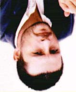

"Benim bir şey yaptığım yok!" diye bağırdı Altan. "Yarın konsere çıkacağız ve gelip bize ne söylüyor!"
"Ağır ol bakalım biraz."
"Olmazsam?"
"Lafını bilecek misin?"
"Ya bilmezsem?"
"Grup kurdun diye karşımda adam mı oldun, it!"
Bu son laf, sessizlik tanrısının garip bir cilvesi sayesinde bütün birahanenin iki saniyelik bir es verdiği ana denk geldiğinden, bir süre havada asılı kalmıştı.
Birahane tavanı yüksek olduğu için, onun akustiğinden de faydalanarak şöyle bir turlayıp yeniden tepemize gelmişti sonra. Altan o lafı almış, kot montunun iç
cebine koyup kalkmıştı yerinden. Merdivenleri sert adımlarla inip gözden kaybolmuştu.
"Eşşoğlueşşek" demişti Nihat Abi. "İçkiye zayıf işte..."
_____________________________________________________________________
WWW.MAXIMUMBILGI.COM
Bu İşte Bir Yalnızlık Var Tuna Kiremitçi ___________________________________
66 __________________________________
"Götüyle içmesin o zaman" diye hırlamıştı bu sefer. Resmen burnundan soluyordu hâlâ.
O an dışarıdan bir el silah sesi duymuştuk. Bu ses geçen yıllar içinde hepimizin zihninde o kadar yer etmişti ki onu bir kez duymak, her türlü ruh halinin içinden çekip çıkarmaya yeterdi bizi.
"Altan..." demişti Nihat Abi.
Sonra masayı devirircesine kalkmış, Altan'ın daha iki dakika önce sarstığı
basamakları üçer beşer atlayarak inmişti. Ben kapıya vardığımda o caddeyi geçip parkın oraya varmıştı bile.
Onları bulduğumda vapur iskelesinin önünde birbirlerine sarılmış haldeydiler.
Uzaktan siren sesleri geliyordu. Bir vapur iskeleye yanaşıyordu. Altan'ın o yıllarda Kadıköy'de oturan bir sevgilisi vardı galiba. Nihat Abi'nin omzunun üstünden, şaşkın gözlerle bakıyordu bana.
"Tamam aslanım" diyordu Nihat Abi, "Tamam koçum. Yok bir şey."
Nihat Abi'nin, bir kardeşini üç yıl önceki bir üniversite çatışmasında kaybettiğini çok sonra öğrenecektik.
Altan, birahanede cebine koyduğu lafı oradan asla çıkarmadı ama. Kim bilir, belki bugün bile saklıyordun.
29
"Ayşecim" dedim, "Bir şey yesen iyi olur." "Canım istemiyor." Çatalını elinde evirip çevirerek pencereden dışarı bakıyordu. Ufka doğru.
"Sen zayıflarsan müşterilerin de kaçar ama." "Niye? Ne alakası var?"
"Kendi yemek yemeyenden lokantacı olur mu?" "Niye olmasın?"
Demek ki şakadan anlamaya niyeti yoktu, üstelemedim. Rüzgârın bulutları
oradan oraya koşturduğu gri bir sabahtı. Ayşe'yi zorla uyandırıp masaya oturtmuştum. Aklımıza Orhan'ı bulmamıza yarayacak yeni hiçbir şey gelmiyordu. Kızcağız işe giderse daha iyi hissederdi belki.
"Bak..." dedi, çatalının ucuyla göstererek. "Kâmuran Hanım."
Yaşlı kadın bahçeye çıkmış, tozu dumana katan rüzgâra aldırmadan ağaçlara bakıyordu. Üzerinde san bir balıkçı yağmurluğu, ayaklarında kaim çizmeler vardı.
Zeytini yesin diye Ayşe'nin önüne doğru sürdüm. "Orhan sana anlatmış mıydı?"
"Neyi?" "Müteahhit olayını. Kadıncağız evi satmayı düşünüyor."
"Biliyorum." "Ne yapacaksın peki?" "Bilmem. Daha düşünmedim."
"Düşünsek iyi olur" dedim, boşalmış çay bardaklarını elime alıp. "O herif bu evi kesin yıkar bence." "Bir bu eksikti" dedi.
_____________________________________________________________________
WWW.MAXIMUMBILGI.COM
Bu İşte Bir Yalnızlık Var Tuna Kiremitçi ___________________________________
67 __________________________________
"Acıyorum aslında kadına. Biraz kederli bir yüzü var." "Hayat hikâyesini biliyor musun sen?"
"Acıklımı?"
"Eskiden pavyon şarkıcısıymış" dedi, çatalı tabağına bırakıp.
"Bana açık çay koy, olur mu?"
Kâmuran Hanım önünde durduğu dut ağacının gövdesini eliyle okşadı, sonra dönüp bize doğru baktı. Gülümseyerek el salladı. Aydınlık, hoş bir gülümseyişi vardı. Ayşe ona karşılık verdi. Bardakları alıp mutfağa yürüdüm.
"Günün birinde İzmir'de bir adamla tanışmış" dedi Ayşe, getirdiğini çayı
karıştırırken. "Kâmuran Teyze fuarda uvertür çıkıyormuş. Adam da tüccar.
Resmen karısını boşamış Kâmuran Teyze için. Sonra işleri bayağı bir bozulmuş
ama. Herhalde ilk karısının ahi tutmuş. O kadar handan hamamdan geriye ellerinde bir tek bu ev kalmış sonunda, işin komik tarafı, zaten yasak aşk yaşar-larken buluştukları evmiş burası."
"Garsoniyerde oturuyoruz yani. Çok şahane."
"Aslında fena bir yer sayılmaz" dedi, gülerek. "Adam işi biliyormuş."
"Gel bak" dedi, masadan kalkıp. Zaten kahvaltıdan yırtmak için bahane arıyordu. Önüme düşüp beni koridorun öbür ucuna götürdü, içinde plastik kovaların, boya fırçalarının falan durduğu ahşap dolabı tutup yana çektik. Ayşe eğildi, boya fırçalarından birinin tersiyle marley zemine vurdu.
"Duydun mu?"
"Ne duyacaktım?"
"Bir de müzisyen olacaksın. Ses sana garip gelmiyor mu?"
"Bilmem... Gelmesi mi lazım?"
Fırçanın dibiyle bu sefer bir metre gerideki bir noktaya vurdu. Sonra yeniden dolabın altındaki karoyu yokladı. "Farkı gördün mü?"
"Burası biraz yankılanıyor galiba."
"Evet. Evde eskiden aşağı doğru helezoni merdiven varmış. Katları birbirine bağlıyormuş. Yeri de büyük ihtimalle burası."
"Kızım sen nereden biliyorsun bunları?"
"Oğlum ben burada üç senedir oturuyorum. Kâmuran Teyzem akşamüstleri uğrardı bana. Sohbet ederdik."
"Şimdi niye etmiyorsunuz?"
"Etmediğimizi kim söyledi?"
"Orhan'ın durumunu biliyor mu peki?"
_____________________________________________________________________
WWW.MAXIMUMBILGI.COM
Bu İşte Bir Yalnızlık Var Tuna Kiremitçi ___________________________________
68 __________________________________
"Ben bu kadar şey bildiğime göre, o da benim hakkımda bir şeyler biliyor tabii.
Kadınlar bu işi karşılıklı yapar."
Alt katin kapısında yaşlı kadınla karşılaştım. Boyasız gri saçları, yağmurluğun başlığından kıvrımlar halinde taşıyordu. Eski bir pavyon şarkıcısına benzemiyordu işte. Filmlerdeki İstanbul hanımefendilerine benziyordu.
"En çok ağaçlara üzülüyorum" dedi. "Belki kesmezler, belli mi olur?"
"Onları eşim severdi. Benim nebatatla aram yoktu pek. Ama onu kaybettikten sonra ben de pek bir düşkünleştim. Yazık." "Belki kesmezler ama."
Başını çevirip önce o iki ağaca, sonra tekrar bana baktı. Dudaklarında tuhaf bir gülümseme vardı. Nasıl derler, acı bir tebessüm.
"Kızımız nasıl?"
"İyi... Daha iyi yani. işe gitti demin."
"Hayat böyle işte. insan bazen her şeyi kabul edemiyor."
Başımı eğip sustum. O an ne söylesem yanlış olacakmış gibi geldi bana.
30
Öğleden sonra Veli'ye gittim, bana yeni aldığı efekt aletim gösterdi. Neredeyse yarım metre boyundaki alet çok havalıydı. Her tarafında ışıklar yanıp sönüyordu. Üzerinde çeşitli pedallar yan yana dizilmişti. Ona baktıkça çocuğun içi mutlulukla doluyordu herhalde.
"Hocam sana da lazım bundan bir tane" dedi. "Kaça aldın sen bunu?"
"Uf! Hiç sorma!"
Sonra şeker pembesi gitarını alete bağladı, düğmelere dokundu ve yarım saat boyunca canhıraş sesler çıkardı karşımda. Alet o kadar gelişkindi ki, içine giren her türlü sesi iyice cilalamadan bırakmıyordu. Onun sayesinde Veli'nin çaldıkları
bile müziğe benzeyecekti neredeyse.
"Evet" dedi sonunda. "Ben hazırım!"
"Önce gitarı pedaldan çıkar" dedim, "Çıplak çalmak senin için daha iyi."
"İnsan böyle bir oyuncağı nasıl bırakır ki?"
"Çalmayı öğrenmek istiyorsa bırakır. Daha oralara gelmedik."
Birden yüzü asılıverdi. Hakikaten çocuk gibiydi bu Veli, otuzunu devirdiğine inanamazdınız. Hiç konuşmadan yaptı söylediğimi. Sonra da oyuncağını topladı, kutusuna yerleştirdi. Gitarını kucağına alıp karşımdaki sandalyeye oturdu.
"Hocam be..." dedi, acıklı bir sesle. "Benden bir bok olmaz di mi?"
_____________________________________________________________________
WWW.MAXIMUMBILGI.COM
Bu İşte Bir Yalnızlık Var Tuna Kiremitçi ___________________________________
69 __________________________________
"Bilmiyorum" dedim. Böyle bir söz beklemiyordum ondan. Ayrıca söz o kadar doğruydu ki ne cevap vereceğimi bir an sahiden bilemedim. Ona acı gerçeği söylemem gerekip gerekmediğini düşündüm.
"Bu işin yüzde sekseni çalışmak bence" dedim. Ne de olsa öğretmeniydim.
Umudunu kaybetmesi bana bir müşteriye mal olacaktı.
"İhtimal var yani."
"Hank Marvin gitara otuzundan sonra başlamış mesela."
"Hadi ya! Hank Marvin kim?"
"The Shadows'un gitaristi."
"Ya..." dedi, düşünceli düşünceli. Başını kenarları hasırlı kanepeye dikmiş, aşın dalgın gözlerle bakıyordu. Aniden boyut değiştirmiş gibiydi. Bir şey kullanıyor muydu acaba?
"Sende ot bulunur mu?"
"Nasıl?"
"Ot. Üfürük. Püf püf. Ya da şimdi ne diyorlarsa. Var mı evde?"
"Var..." dedi, tereddütle. "Olması lazım. Yani herhalde kalmıştır."
"Ne dersin?"
"Vay..." dedi, bu sefer sırıtarak. "Sen takılır miydin?"
"Sen ne diyorsun!"
"Bekle..."
Uzun bacakları üzerinde yaylanarak kalktı, koşar adım geçtiği koridorun ucunda gözden kayboldu. Sonra da elinde ikimize bir içimlik yetecek malzemeyle geri döndü. Onu hiç bu kadar mutlu görmemiştim.
Yarım saat sonra neşemizden geçilmiyordu. Güya birtakım egzersizler yapıyorduk, ama ne o bir şey anlıyordu çaldığından ne de ben. Sonra iyice cıvıyıp bıraktık gitarı. Uzandı, en az gitar pedalı kadar pahalıya benzeyen sete bir CD
koydu. Robert Plant aniden "Ship of Fools"u söylemeye başladı.
"Hocam be" dedi, içini bir daha dumanlayıp. "Şu Marsilya'daki plak şirketi işini düşündün mü?"
"Siktir et şimdi Marsilya'yı" dedim, "Ben sana başka şey soracağım."
"Sor."
"Bu evin kirasını kim veriyor Allah aşkına?"
"Annem" dedi, etraftaki eşyaları gösterip. "Belli olmuyor mu?"
"Sen bir işte çalışıyor musun peki?"
"Hayır."
_____________________________________________________________________
WWW.MAXIMUMBILGI.COM
Bu İşte Bir Yalnızlık Var Tuna Kiremitçi ___________________________________
70 __________________________________
"Hiç çalıştın mı?"
"Hatırladığım kadarıyla hayır" dedi gülerek.
"Annen nerede peki şimdi?"
"Bozcaada'da."
"Ne yapıyor peki orada?"
"Üzüm bağı satın aldı deli."
"Bu ara böyle bir moda mı var?"
"Bilmem" dedi, dumanlı bir kahkahayla. "Niye soruyorsun?"
31
O gün Veli'nin aşk hayatı hakkında gayet güzel aydınlandım. Mahalleden arkadaşı olan ünlü bir tiyatrocuya âşıktı. Gitar çalmayı da meşhur olup kadına yeniden ulaşabilmek için öğreniyordu. Tanıdığım insanların çoğu gitara bu tip bir nedenle başlamıştır zaten.
Dışarıda beni yine rüzgâr karşıladı. Biraz daha yumuşamıştı sanki, artık isimliyordu. Kafam hâlâ bulutluydu. Biraz hava alsam iyi gelir diye düşündüm.
Vali Konağı Caddesi'ne çıkıp Harbiye'ye doğru yürüdüm.
Dame de Sion'u, İstanbul Radyosu'nu geçtim. Caddedeki akşamüstü trafiğini perdede oynayan bir film gibi seyrediyordum. Divan Oteli'nin önünde iki araba ıslak zemin yüzünden birbirine girmişti. Adamlar inmiş sessiz sessiz bakışıyordu. Birden bana komik geldi bu. Gidip yanlarında dikildim.
"Kazayı gördünüz mü?" dedi, kel kafalı olanı.
"Gördüm" dedim.
"Yol benim değil miydi?"
"Sen önce frene basmasını öğren!" dedi öteki. Onun arabası daha güzeldi. Ön taraf boydan boya ezilmişti ama.
"Şahitlik yapacak mısınız?" dedi polis. Ben yaşta bir adamdı. Üstelik kibardı, içimden ona yardımcı olmak geldi birden. "Yaparım tabii."
Telefon numaramı ve adresimi istediler, verdim. Sonra üçüyle de selamlaşıp devam ettim yoluma.
Şimdi kendimi daha da iyi hissediyordum. Sola dönüp Taksim Parkı'na girdim.
Her taraftan çimen ve toprak kokusu yükseliyordu. Fıskiyesi çalışmayan havuzun etrafından dolanıp merdivenlere doğru yürüdüm. Tam o sırada arkamda bir çatırtı duydum. Döndüğümde, bir boyacı çocuk kenardaki masalardan birine kapaklanmıştı. Sonra üzerine boya sandığı da uçtu. Çocuk zamanında yana çekilince da sıyırıp geçti onu.
_____________________________________________________________________
WWW.MAXIMUMBILGI.COM
Bu İşte Bir Yalnızlık Var Tuna Kiremitçi ___________________________________
71 __________________________________
"Senin ağzına sıçarım, puşt!"
Küfrettiği, parktaki tinerci oğlanlardan biriydi. Oğlan boyacının üzerine atladı.
Yerde yuvarlanmaya başladılar. Avaz avaz bağrışıyorlardı.
Ben bir şey yapmam gerekip gerekmediğini düşünürken, parkın iki ucundan on beş-yirmi çocuk olay yerine doğru koşmaya başladı. Divan Oteli tarafından koşanların hepsinin sırtında boya sandığı, Taksim yönünden gelenlerin de ellerinde tiner şişesi vardı, iki çocuğun boğuştuğu noktaya varamadan karşılaştılar. Küfürleşmeye başladılar. Sayıca denk olduklarından, kavgaya tutuşmakta tereddüt ediyorlardı.
Hiçbiri on beş yaşından büyük değildi. Park günün bu saatinde nedense tenhaydı. Uzakta iki kadın gördüm, ama onlar da hızlı hızlı yürüyüp gözden kayboldular. Sonra o kafayla çocuklardan birini Ezgi'ye benzettim. Ezgi birkaç
yıl önce ve erkek doğmuş olsa böyle bir şey olurdu herhalde. Koşup aralarına girdim.
"Yapmayın" dedim, "Ayıp oluyor!"
"Sana ne be?" dediler.
"Bana bir şey olduğu yok. Olan size olacak."
"Bizim derdimiz seni mi gerdi?"
Tam o şurada, bazılarının avucunda parlayan çakıları gördüm. Görmemiş gibi yapmam gerektiğini düşündüm. Bu, zamanında Langa'da Öğrendiğimiz bir taktikti. Korktuğunuzu anlayınca daha çok sinirlenir karşı taraf.
"Burada girişeceksiniz, sonra polis gelecek. Sizi toplayıp karakolda ağzınıza sıçacak. Hem az ileride trafikçiler var. Patırtıyı duyunca anında damlarlar buraya."
"Trafikçiler bize koymaz" dedi biri.
"Ya haber verirlerse?" dedim.
"Sen siktirip gitsene buradan."
"Gitmiyorum" dedim. O an olayı yirmi metre yukarıdan izliyordum sanki. Ortada ben duruyordum. Çocuklar hilal biçiminde etrafımı sarmıştı. Heveslerini kursaklarında bırakmıştım. Nefret ediyorlardı benden.
"İsterseniz beni de dövün. Hadi bakalım. Başınız iyice belaya girer." Ses çıkarmadan birbirlerine baktılar. Sapık olduğumu düşünüyorlardı herhalde.
Sonra çakıların tek tek ceplere konduğunu gördüm.
"Sizin ananızı sikeriz!" dedi, bir taraf ötekine. "Bi bok yapamazsınız!" dedi, ötekiler.
Sonra müzikal dansçıları gibi geri geri yürüyerek, ağır çekimde uzaklaştılar birbirlerinden, iki grup da gözden kaybolana kadar bekledim. Sonra bir banka oturup derin derin nefes aldım. Hava iyice kararmıştı. Canım bir şey içmek istiyordu.
_____________________________________________________________________
WWW.MAXIMUMBILGI.COM
Bu İşte Bir Yalnızlık Var Tuna Kiremitçi ___________________________________
72 __________________________________
32
"Haline bak!" dedi Ayşe.
"Pasaja uğradım."
"Ama abartmaya başladın sen."
"Sinan'ın yeri kapanmış, biliyor muydun? Koca pasajda ayaküstü içilecek yer kalmamış."
"Gözünü seveyim dağıtma" dedi, yüzüme üzgün üzgün bakıp. "Şimdi bir de senle uğraşmayalım."
Neden bilmiyorum, bu söz dokundu bana. Zaten boşandıktan sonra pis bir duygusallık basmıştı içimi. Bir senedir vara yoğa hisleniyordum.
"Dağıttığım falan yok" dedim, "Çocuk muyum iki birayla kafayı bulayım?"
"Kahve yapayım bari."
"Boş ver."
"Şeker koyayım mı?"
"Koyma."
"Ev serin. İçeriden battaniye al."
"Üşümüyorum. Birazdan kalkarım zaten."
O mutfağa gittiğinde kanepe çok çekici göründü. Ayakkabılarımı çıkarıp uzandım. Veli bana nasıl bir zıkkım içirdiyse artık, beynim pelte gibiydi hâlâ.
Düşüncelerim benden izin almadan oradan oraya zıplıyordu. Tavandan, üst kattaki Kâmuran Hanım'ın ayak sesleri geliyordu. Onu eski plakların durduğu odasındaki pencereye kadar gözlerimle takip ettim. Perdelerini kapattığını
duydum. Sonra da annemi düşünürken buldum kendimi.
Boğazda bir sis vardı. Kardeşimle ben onun iki elinden tutmuş, vapur iskelesinde bekliyorduk. Bayramdı galiba. Annem ağlıyordu.
"Uyumadan iç şu kahveyi. Mideni tutsun." "Midemde bir durum yok."
Ayşe iskemlelerden birini baş ucuma çekti, fincanı üzerine koydu. Kendisi de masanın yan tarafındaki iskemleye oturdu, bacak bacak üstüne attı. Yeşil çanağın içinde kibrit aramaya başladı. Güzeldi bacakları.
"Bu hafta Bozcaada'ya gideceğim" dedi, sigarasını yakarken. "Bir işe yarar mı
sence?" "Hiçbir şey yapmamaktan iyidir."
Doğrulmaya çalıştım, beceremedim. Başım o kadar ağırlaşmıştı ki engelliyordu beni.
"Bugün ders verdiğim çocuğun annesi de Bozcaada'daymış."
"Ve?"
_____________________________________________________________________
WWW.MAXIMUMBILGI.COM
Bu İşte Bir Yalnızlık Var Tuna Kiremitçi ___________________________________
73 __________________________________
"Bilmiyorum. Belki bir yardımı dokunur diye düşündüm."
"Ne yapıyormuş orada?"
"Orhan'ın yaptığını. Bu bağ işinde herhalde para var." "Gerçek şu ki..." dedi, eteğine düşen külleri silkeleyerek. "Orada Orhan'la karşılaşsam ne yapacağımı
bilmiyorum aslında. Yani ona ne derim, o bana ne der, denecek bir şey kaldı mı
artık, inan hiçbir fikrim yok."
Birden başım biraz daha ağırlaştı. O ise külleri silkeliyordu hâlâ eteğinden.
Uzun parmakları, odanın loşluğu içinde alçalıp yükseliyordu. Küller havada uçuştukça elleri daha da hızlanıyordu. O kadar uyumluydu ki hareketleri, görünmez bir orkestrayı yönettiğini sanırdınız. Bileklerinin çizdiği en küçük bir kavis kulaklarıma yüzlerce üflemelinin sesini getiriyordu. Sağ eli her yükseldiğinde içimde yaylılar kımıldıyordu. Kalbim kendini onun parmaklarının ritmine göre ayarlamıştı çoktan.
"Seni seviyorum" dedim.
"Biliyorum" dedi.
"O zaman neden mutlu olmayalım?"
"Becerebilir miyiz sence?"
"Herkes nasıl beceriyor?"
"Belki de denemek gerek. Buna bir şans vermek gerek."
"Kesinlikle."
Oda kararmış, bütün ışık onun yüzünün etrafında toplanmıştı. Başını hafifçe öne eğmiş, bir ayaklarının ucuna bir de bana bakıyordu. Üzerinde pembe bir sabahlık vardı. Bu da onu korunmaya muhtaç bir çocuk gibi gösteriyordu. Onu korumaya hazırdım. Onun için trafik kazalarında şahit yazılmaya, sokakta çocuklarla dalaşmaya hazırdım.
"Seni hayatım boyunca sevecekmişim gibi geliyor bana." "Evine gitme artık, burada kal."
Hissettiğim ağırlık yüzünden silkindim. Uyandığımı anladım. Ayşe üstüme yorgan örtmüştü. Onun serin kokusu vardı yorganda. Baktım, baş ucuma koyduğu sandalyeyi tekrar yerine götürüyordu.
"Kahveyi de boşu boşuna yaptırdın bana."
Odadaki ışık eski halini almıştı. Birden huzursuz hissettim kendimi. Az önceki konuşmayı sahiden yapıp yapmadığımızı bile çıkaramadım.
"Biz demin ne konuşuyorduk?"
"Orhan Bey'in üzüm işine girecek parayı nereden bulduğunu."
Bunu hiç düşünmemiştim işte. "Belki sadece kiralamıştır" dedim.
_____________________________________________________________________
WWW.MAXIMUMBILGI.COM
Bu İşte Bir Yalnızlık Var Tuna Kiremitçi ___________________________________
74 __________________________________
"Ben o Bozcaada lafım ilk duyduğumdan beri bunu düşünüyorum. Benim bildiğim, tek kuruş birikmiş parası olmadığı. Eğer benden gizli para istiflediyse işin rengi biraz değişiyor. O kadar para biriktirmek üç günde olacak bir şey değil.
Hele o işsiz haliyle. Eğer bunu yaptıysa, uzun zamandır bu işi planlamış
demektir. Benden kurtulmayı kafaya zaten koymuş demektir. Sence de öyle değil mi?"
Söyledikleri bana çok mantıklı geliyordu. "Bilmem..." dedim, "Bilemiyorum."
"Neyse" dedi, sigarasını küllüğe bastırıp. "Erken kalkacak mısın?"
"Evet."
"İşin mi var?"
"Anneme gitmeyi düşünüyorum."
Kanepenin kenarına oturdu. Yavaş yavaş saçımı okşadı. "Ne hayırlı evlatsın sen."
33
Öğleye doğru, mezarlıktaydım. Yağmur çiseliyordu. Yapraklar toprağın üzerinde birbirlerine yapışıp ıslak bir halı olmuşlardı. Mezarlığı ikiye bölen ve üzeri boydan boya bir çeşit yosunla kaplı duvarı geçerken etrafıma baktım. Yirmi beş
yıldır geldiğim mezarlıkta hâlâ yolumu kaybetmekten korkuyordum işte.
Burada hissettiğim ölüm duygusu değildi. Herhalde o kadar mezar arasında sıradan bir şey haline geliverdiğinden, benim gözümde bütün havasını
kaybediyordu ölüm. Daha çok ıslaklık, yalnızlık ve nereden çıktığım bilmediğim bir bencillik hissiyle doluyordum. Bu benim üzüntülerimi uyuşturan bir histi.
Galiba insan kendi bencilliğiyle en çok bir mezarı ziyaret ettiğinde yüz yüze geliyor. Annem artık toprağın altında durduğu için üzülüyordum. Ama annemsiz olmak daha çok yakıyordu canımı.
Mezarlıkta çok az ziyaretçi vardı, içinde çocukların da olduğu küçük bir grup, duvar hizasındaki güzel bir kabrin etrafında toplanmışlardı. Genç bir müezzinin okuduğu duayı dinliyorlardı. Erkekler, rüzgârda çırpınan şemsiyelerini kadınların üzerine tutmuştu.
Çiçekleri anneme bıraktım. Babama da iki karanfil seçtim. Bu da zaten annemden kalma bir şeydi. Buraya yıllarca beraber gelmiştik. Çiçekleri o zaman da mermerin hemen altına bırakıyorduk. Babamın mermerin üzerindeki resmi, hep lüzumundan fazla ciddi gelirdi bana.
Sonra annemin bana mezar taşının üzerinden gülümseyen resmine baktım.
Onun hayattayken böyle gülümsediğini hiç görmemiştim. Kırklarında görünüyordu. Ne genç, ne yaşlı.
Mezarın başında üşürken mırıldandığımı fark ettim. O serseri melodi yine gelip bulmuştu beni. Üstelik bu sefer ne tarafa doğru gideceğini bilir gibi bir hali _____________________________________________________________________
WWW.MAXIMUMBILGI.COM
Bu İşte Bir Yalnızlık Var Tuna Kiremitçi ___________________________________
75 __________________________________
vardı, ilk bölümün sonunda garip ve hoş bir kayma yapıp yeni bir kısma geçiyordu. Ben mırıldandıkça ağzımdan koyu bir buhar çıkıyordu. Babam kaşlarını çatmış, mezarlığın az ilerisindeki otoparka bakıyordu.
Beni gitar çalarken hiç görmemişti. Çok bayılmazmış gibi geliyordu bana. Gerçi zamanla herkesin kulağını okşayacak kadar pişmiştim piyasada. Belki bir akşam annemle ikisine "Geçti Sevdalarla Ömrüm'ü çalar, onun da gönlünü yapardım.
Melodi, ağzımdan çıkan buharla beraber havaya dağılarak bir nakarata doğru ilerliyordu. Bense kızıyordum ona Kimin şarkısını arakladığımı hâlâ
bulamamıştım çünkü. Büyük kabrin etrafındaki kalabalığın yavaş yavaş
dağıldığım gördüm. Çocuklar annelerinin elinden kurtulup yamaç yukarı
koşmaya başladı. Grubun en sonunda yürüyen iki adam el kol hareketleri yaparak bir şey tartışıyordu. Arkadan bakınca kadınların üçü de birbirine benziyordu. Hepsi o kadar içindeydi ki hayatın, kabirde yatanın zaten uzun zamandır orada olduğunu anlıyordu insan.
Mırıldanırken bir taraftan da eğilip annemin üzerindeki otları ayıklamaya çalıştım. Onun ayak ucundan iki san çimen kopardıktan sonra yine bir tuhaf hissetim kendimi. Bunun yapılması gereken bir şey olduğunu biliyordum, ama annemin bir yerinden bir şey koparmak düşüncesi sinirimi bozuyordu işte.
O güne kadar, hayatımda tek bir beste yapmamıştım. Beste yapmak, sıfırdan bir şey yaratmaktı. Yaratmak, vücudun kimyasını bozan bir şeydi. Eknıek peşinde koşarken pek işine yaramazdı insanın.
34
Geceyarısına doğru çamaşırları makineye tıkıştırmaya çalışırken telefon çaldı.
Külüstürün kapağını güç bela kapatıp büyük odaya koştum. Ahizeyi telaşla kaldırdım, kablonun dolandığı tornavida kutusu gürültüyle yere indi.
"Efendim?" dedim, biraz huysuz bir sesle. O sırada bir elimle de kutuyu toplamaya çalışıyordum ve aşağı eğildikçe ahizenin yanağımdan kayması sinir ediyordu beni.
"Merhaba Memet, nasılsın?" "Orhan?"
"Zamansız mı aradım?"
Kutuyu kaldırıp masanın üzerine fırlattım. "Orhan, sen misin?" "Duyamıyorsan bir daha arayayım." "Neredesin?"
"Şu an Beşiktaş İskelesi'nde." "Ne yapıyorsun orada?"
Güldü. "Şimdilik telefonla konuşuyorum. Biraz zamanın var mı?"
"Gelmek ister misin?"
"Olmaz. Ayşe duyarsa heyecanlanır şimdi. Zamanın var mıydı?"
_____________________________________________________________________
WWW.MAXIMUMBILGI.COM
Bu İşte Bir Yalnızlık Var Tuna Kiremitçi ___________________________________
76 __________________________________
Yarım saat sonra iskeleye vardığımda, onu banka oturmuş polislerle sohbet ederken buldum, ikisi de genç adamlardı. Orhan onlara ne anlattıysa artık, katıla katıla gülüyorlardı.
"Müsaadenizle çocuklar" dedi, beni görünce, "İşte geldi arkadaşım."
"Kimliğiniz yanınızda mı?" dedi, polislerin daha esmer olanı.
Elimi cüzdanıma attım, öteki memur kolumu tutup engel oldu.
"Tamam" dedi, "Yanındaysa mesele yok. "İyi geceler Orhan Bey. Allah analı
babalı büyütsün."
"İyi geceler" dedi Orhan. "Size de bu saatte kolaylık versin."
Üzerinde lacivert kabam vardı. Sokak lambasının ışığında, daha yarım saat önce tıraş olmuş gibi parlıyordu yüzü. Pantolonu ütülü, ayakkabıları boyalıydı.
Gülümsemesini bozmadan yüzüme baktı. Eliyle bankın köşesini işaret ediyordu.
"Ne anlatıyordun onlara?"
"Sorma..." dedi, gülerek. "Burada dikildiğimi görünce şüphelendiler tabii. Ben de mecburen bir şeyler uydurdum. Güya karım hastanede doğum yapıyormuş da ben de dayanamayıp hava almaya çıkmışım. Bakma ciddi durduklarına, daha çocuk bunlar. Dünyadan haberleri yok."
"İyi görünüyorsun" dedim.
"İyiyim çok şükür" dedi.
"Ayşe öyle değil ama."
"Bana kızgınsın, değil mi?"
"Beni bırak. Kızcağız aklını oynatacak. Gece gündüz senden haber bekliyor."
"Hasta değil ya?"
"Şimdilik değil. Niye aradın beni?"
"Bu akşam Cumhuriyet'e uğradım. Aliler beni sorduğunuzu söyledi. Düşündüm ki en azından seni biraz durumdan haberdar etsem fena olmaz."
"Durumdan haberdar olması gereken ben değilim."
"Haklısın. Ama içinde bulunduğum durumu Ayşe'ye aynı açıklıkta anlatabileceğimden pek emin değilim."
Konuşması, her zamanki Orhan'a biraz benzemeye başlamıştı. Bunu fark edince biraz rahatlar gibi oldum. Rahatlayınca da ona sinirlenecek enerjiyi bulabildim içimde.
"Bak kardeşim" dedim, gözlerimi onunkilere dikip. "Senin bir karın var. Bu kıza bunu yapmaya hakkın yok."
"Yapacağım şey sonunda onu da mutlu edecek ama"
_____________________________________________________________________
WWW.MAXIMUMBILGI.COM
Bu İşte Bir Yalnızlık Var Tuna Kiremitçi ___________________________________
77 __________________________________
"Valla şimdi evine gitsen daha mutlu olur."
"Gidemem."
"Niye?"
"İşin içinde bir kadın var."
İskeleden sahil yoluna doğru uzanan rıhtımın derinliklerinde bir çocuk belirdi.
Elinde paçavraya sarılmış bir şişe vardı. Sigara istedi, çıkarıp paketi uzattım.
Çocuk iskeleye doğru uzaklaşırken Orhan seslendi arkasından.
"O tarafa gitme aslan, devriye var."
Çocuk bir iki adım daha attıktan sonra durdu, mekanik hareketlerle geri dönüp yeniden geçti önümüzden. Rıhtım karanlığında gözden kayboldu.
"Yoksa bunu tutup bütün gece ıslatırlar" dedi Orhan. "Yazık."
"Ne kadını bu?"
"Zengin bir kadın" dedi, ağır ağır konuşarak. "Geçkin bir kadın. Kocası
tarafından ha bire aldatılan bir kadın. Mutsuz bir kadın."
"Nerede tanıştın peki?"
"Dershanedeki çocuklardan birinin annesi. Zavallı aylarca kur yapmaya çalıştı
durdu bana. Hatta bir bahane yaratıp telefonunu bile verdiydi. İşsizlik canıma tak edince düşündüm ki belki bundan faydalanabilirim."
"Nasıl?"
"Kadının Bozcaada'da gayrimenkulleri var. Zamanında kocası almış. Bağ evleri, bahçeler falan. Bir iki tanesini üzerime yapacak. Sonra zaman içinde bir bahaneyle hır çıkarıp ayrılacağım kadından. Artık o bağları işletir miyiz satar mıyız, Ayşe Hanım düşünsün. Tabii hikâyenin iki mühim noktası var. Birincisi, onun karımla ayrıldığımıza inanması lazım, ikincisi, kadının kocasının vaziyete uyanmaması lazım. Çünkü nasıl derler, adam dallama biraz. Durduk yerde bela çıkarabilir."
Paketini çıkarıp tuttu, birer sigara yaktık. Soğuk biraz daha artmıştı sanki.
Gökyüzünde tek yıldız yoktu. Çaresiz martılar suyun üzerinde alçalıp yükseliyordu.
"Orhan" dedim, "Bu, dünyadaki en dangalak plan." "Nasıl yani?"
"Hatta dangalak bile değil. Çocukça. O bağları sana yâr ederler mi sanıyorsun?"
"Etmezler mi?"
"Etmezler Orhancım. Böyle kadınlar ne kadar geçkin ve mutsuz olurlarsa olsunlar sonunda o dallama kocalarına dönerler yine."
"Herif onu aldatıyor ama."
"Sorun değil, halledilir."
_____________________________________________________________________
WWW.MAXIMUMBILGI.COM
Bu İşte Bir Yalnızlık Var Tuna Kiremitçi ___________________________________
78 __________________________________
"Öyle mi dersin?"
"Öyle derim."
Yüzüne bakmak istemiyordum, insan böyle durumlarda biri yüzüne bakarsa huzursuz olur çünkü. Yine de bir gözüm ondaydı. Omuzları şimdi çöküvermişti.
Ayağını sinirli sinirli sallıyordu. Orhan'ı sevdiğimi hissettim birden. Ne olursa olsun, bu dünyanın onun asla anlayamayacağı bir matematiği daha vardı.
"Hayatım eşek gibi çalışmakla geçti" dedi sonra, izmariti denize sallayıp.
"Sonunda bu boktan kriz çıktı ve şutladılar beni. O puşt müdür beni odasına çağırdığı gün benim doğum günümdü, biliyor musun?"
"Bilmiyordum."
"İşsizken hep düşündüm. Madem bu iş çalışarak olmuyor, başka yolları olmalı
dedim. Çünkü dünyada birtakım adamlar var ve birtakım numaraları gayet güzel beceriyor onlar."
"Ama sen o adamlardan değilsin ki."
"O zaman aklıma Belma'nın telefon numarası geldi. Dedim ki altı ay kadının gönlünü yaparım, sonra biraz ferahlar elimiz."
"Beraber Cumhuriyet'e gittiğin adam kim peki?"
"Avukatı."
"Hikâyeyi biliyor mu?"
"Kafaladım onu. Şimdi kendini matematikçi sanıyor."
35
Barbaros Bulvarı'na kadar yürüdük. Yanımızdan ertesi günkü maç için şimdiden stadyuma giden çocuklar geçti. Meydana bakan binalardan birinin ön cephesini kaplayan reklam panosu ışıklarını yakıp söndürüyordu, insanın gözünü
yoruyordu onu seyretmek.
'İstersen gel bende kal."
"Olmaz" dedi, "Devam etmem lazım."
"Nasıl hissediyorsun?"
"Kötü."
"Ayşe hafta sonu Bozcaada'ya gitmek istiyor. Engelleyemem herhalde. Orada olacak mısın?"
"Şu durumda olmasam daha iyi olur değil mi?"
"Bilemiyorum."
_____________________________________________________________________
WWW.MAXIMUMBILGI.COM
Bu İşte Bir Yalnızlık Var Tuna Kiremitçi ___________________________________
79 __________________________________
"Bu işler pek bana göre değil" dedi, sıkıntıyla. "Aynı anda iki kadın falan.
Yüzüme gözüme bulaştırmam inşallah."
"İnşallah" dedim. Ne umut edeceğimi ben de şaşırmıştım aslında.
Dudaklarında gülümsemeyi andıran bir şey belirdi. Gözlerinde bunu doğrulayan bir ifade yoktu ama. Bir şey söylemek istedim, aklıma hiçbir şey gelmedi.
Uzattım kollarımı, o da uzattı, sarıldık.
"Bir şey olursa haber ver bari."
"Sana hıyarca geliyor, biliyorum" dedi, "Ama inan ki olmayacak şey değil. O
kadar da imkânsız değil yani." "Ayşe'ye bir şey diyeyim mi?" "Deme."
Döndüğümde bire geliyordu. Üst kat penceresinde zayıf bir ışık vardı. Orhan'ın geçen yaz aldığı tüylü lambanın ışığı. Ayşe yalnız kaldığından beri yatarken lambayı açık bırakıyordu.
Sigarayı küllüğü falan ayarlayıp salondaki koltuğa tam oturmuştum, kapı çaldı.
Kapının çalmasını istemiyordum. Ayşe'nin gelmesini istemiyordum. Yalanlar uyduracak halim yoktu hiç.
Eşikte kedi yavrusu gibi duruyordu. "Girebilir miyim?" "Hayrola?" dedim,
"Uykun mu kaçtı?" "Beş dakika oturur giderim. Merak etme."
Teybe Ortaçgil'in en eski kasetini koydum. Adamın sesi bu saatte iyi geliyordu.
Ayşe dirsekleri yamalı kahverengi hırkasını giymişti. Uzun bir uykudan yeni uyanmış da gerçek hayata dönmekte zorlanıyor gibiydi. Sırtını sedirdeki minderlere gömdü, gözlerini tavana çevirdi. Ben de halıya dağılmış tornavida kutusunu yerleştirmeye koyuldum.
"Yaptıklarım sana mantıklı geliyor mu?"
"Kusura bakma, anlayamadım."
"Asıl sen kusura bakma" dedi, sedirde doğrularak, iki eliyle alnını sıvazladı, derin bir nefes aldı. "Bazen çekilmez oluyorum."
"İyi misin?"
"Bilmiyorum ki... Camdan gördüm seni. Gece vakti nereden dönüyordun?"
"Yürüyüşe çıktım" dedim. Her ihtimale karşı hazırlamıştım bunu. "Birden midem kazındı. Bir şeyler yiyeyim dedim."
"Bana niye seslenmedin?"
"Uyanma diye."
"Çok incesiniz."
"Öyleyimdir."
Bacaklarını toplayıp divana uzattı. Vücuduna göre küçük, çocuksu ayakları
vardı. Tırnakları kısacık ve ojesiz olurdu hep.
_____________________________________________________________________
WWW.MAXIMUMBILGI.COM
Bu İşte Bir Yalnızlık Var Tuna Kiremitçi ___________________________________
80 __________________________________
"Galiba sen haklısın" dedi, "Burada kendimi kandırıyorum. Olanları görmekten kaçıyorum. Görürsem dayanabileceğimden emin değilim, onun için yapıyorum herhalde. Terk edilmek çok kötü."
"Sen terk edilmedin ki ama."
"Aslında Orhan'a da kızmamak lazım. Şimdi hatırlıyorum da, yaptığı bir sürü
şey gözümde bir mana kazanıyor. Garibim o kadar zaman anlatmaya çalışmış
bana derdini. Aşkımızın bittiğini bana göstermeye çalışmış. Açık açık söyleyemediğinden anlayamamışım."
"Orhan seni seviyor bence."
"Nasıl bu kadar eminsin?"
Güzel bir soruydu. "Erkeklerin de kendilerine göre sezgileri vardır" dedim, lafı
nereye götüreceğimi bilemeden, "Biz de birbirimizin ne hissettiğini tahmin edebiliriz. Sana nasıl baktığını benim gözlerimle görseydin, sen de anlardın."
"Memetçim, teşekkür ederim."
"Niye?"
"Beni avutmaya çalışıyorsun."
"Çalışmıyorum."
"Çalışıyorsun" dedi, aynı anda hem burnunu çekip hem de gülerek. "Kendimi iyi hissedeyim diye kafadan atıyorsun. Bunları şimdi uydurduğun o kadar belli ki."
Kızardığımı hissettim. "Bir şey uydurduğum yok benim." "Ben galiba ağlayacağım."
Dirseğini arkasındaki mindere, elini de ahuna yaslayıp hıçkırmaya başladı.
Güzel, sessiz bir ağlayışı vardı. Yüzündeki acı ifadesi çok daha büyüktü oysa.
Başkası olsa o ifadeyle çığlıklar atar.
Elimi omzuna koydum. Aniden eğilip başım göğsüme yasladı. Kısa saçlarının açıkta bıraktığı ensesini önümde buldum. Eğilip saçlarından öptüm onu. Başını
göğsüme biraz daha bastırdı. Gözyaşlarının gömleğimi ıslattığım hissediyordum.
Küt küt atıyordu kalbim.
"Sen olmasaydın..." dedi.
"Bir çaresine bakardın" dedim.
"Yapamazdım. Burada olman o kadar önemli ki."
"Kahve yapayım mı sana?"
"Yapma. Biraz sarıl ama."
Deminden beri boşlukta ne yapacağım bilemeyen kollarım onu sarıverdi. Her şey dehşet verici bir doğallık içinde gelişiyordu.
_____________________________________________________________________
WWW.MAXIMUMBILGI.COM
Bu İşte Bir Yalnızlık Var Tuna Kiremitçi ___________________________________
81 __________________________________
"Memet" dedi, fısıltıyla. "Burada kalayım mı?" "Kalma..." dedim, kokusunu içime çekip.
36
Yatağa girdiğimde çok yalnız hissettim kendimi. Üstelik sıcak ve yapışkan bir şey kasıklarıma doğru iniyordu. Mahallede, okulda ya da askerde o şeyi tarif edecek bir sürü kelime öğrenmiştim.
Özetle, her normal insan gibi kadına ihtiyacım vardı.
Ayşe hakkındaki düşüncelerim de bu yüzden karışıyordu işte. Belki de onu bu kadar lezzetli gösteren benim açlığımdı. Beni ona doğru iten şey içimdeki hayvandı sadece. Duygu falan yoktu yani.
Zaten konu duygular bile olsa durum değişmiyordu. Duyguya da açtım çünkü.
Ama ne zaman bir kadına yaklaşsam terk edilmiş olmanın verdiği bir eziklik duyuyordum. Kadınlar anlıyordu bunu ve galiba hoşlanmıyorlardı, işten çıkarılmış biriyle iş görüşmesi yapar gibi bakıyorlardı bana.
Sonra mecburen yolumu değiştirdim. Değerli duygular aramaktan vazgeçtim.
Seks iki taraflı bir ihtiyaç olduğuna göre, benimle aynı şeyleri arayan kadınlar da olmalıydı.
Bu sefer de beceriksizliğimin kurbanı oldum. Onca yıllık evlilik insanın performansım mahvediyordu. Kadınlara nasıl yaklaşacağımı bilmiyordum.
Onlara ne söylemem gerektiğini bilmiyordum. Yatağa girmeden önce oynanması
gereken oyunun kurallarından tamamen habersizdim, insanlar bu oyunları
oynarken ben hep sahnede gitar çalmıştım çünkü.
Ben de otuz bir çekiyordum. Ne yalan söyleyeyim, çok da zevk alıyordum. Yıllar önce kaybettiğim bir oyuncağı bulmuş gibiydim. Hayalim zincirden boşanmış gibi fantezi üretiyordu.
Otuz bir çekmenin bence tek zararı, yalnızlığı zevkli bir şey haline getirmesi.
Hele buna teşne bur kişiliği de varsa, hayatı boyunca el yordamıyla idare edebileceğini düşünüyor insan.
Nazlı'yla niye ayrıldığımızı sorduklarında, verecek cevap bulamıyordum. Gerçi
"şiddetli geçimsizlik" nedeniyle boşanmıştık, ama şiddet falan yoktu ortada.
Birbirimize el kaldırmamıştık. Tabaklar havada uçuşmamıştı. Ezgi'nin yıllar sonra acıyla hatırlayacağı kavgalarımız olmamıştı. Sanki nikâh memurumuz her şeyi on dört yıl sürecek şekilde ayarlamıştı. Kronometre geriye sayarken biz de eriyivermiştik.
Cemil olmasa ne olurdu diye çok düşündüm. Zaten belli bir neden olmayınca insan daha kötü hissediyor. Geçmişi didikleyip her şeyi aydınlatacak bir kıymık arıyorsunuz. Nazlı'nın ayrılığımızı çevresine nasıl açıkladığım da bilmiyordum.
Son bir iki yıl birbirimize karşı o kadar uygar, o kadar kibardık ki, gören karı-kocadan çok tesadüfen karşılaşmış iki yabancı sanabilirdi bizi.
_____________________________________________________________________
WWW.MAXIMUMBILGI.COM
Bu İşte Bir Yalnızlık Var Tuna Kiremitçi ___________________________________
82 __________________________________
Belki de kafam basmıyor. Kadın ruhundan anladığımdan pek emin değilim. Belki kaseti geriye sarma şansım olsa aynı esrarengiz hataları yaparım yine. Ne olursa olsun evli bir kadın gönlünü işyerine gelen sigortacıya kaptırabiliyorsa, bunun makul bir nedeni olmalı, değil mi?
"Bak" demiştim Ezgi'ye, "Annen ve ben artık beraber oturmayacağız, tamam mı?"
"Ayrılıyor musunuz?" "Evet. Bu seni çok üzer mi?"
"Bilmem. Okulda annesi babası ayrı bir sürü çocuk var." "İyi. Biz de modaya uyduk işte."
"Peki ben ne olacağım?" dememişti. "Oyuncaklarım nerede kalacak?" diye de sormamıştı. Hayatı normal karşılıyordu. Bu yeteneğe doğuştan sahipti benim kızım. Cemil'i de bir şekilde sevmişti. Bu Cemil'in şansıydı. Yoksa sigorta şirketine gider o koca kafasını ikiye bölerdim onun.
İçimde Nazlı'yla bir gün karşılıklı oturup her şeyi konuşacağımıza dair bir inanç
vardı hâlâ. Gerçi etrafımda bunu becerebilen birine henüz rastlamamıştım, insanlar ayrılır ayrılmaz hızla uzaklaşmaya başlıyorlardı. Özellikle kadınlar kısa zaman içinde bir yabancıya dönüşmeyi başarıyordu. Daha birkaç ay önce uyurken seyrettiğiniz kişinin aynı kadın olduğuna inanamıyordunuz.
Çekmecedeki dergilerden biriyle banyoya gittim. Pantolonumu indirip klozete oturdum. Kalçalarımın üşümesi garip bir şekilde hoşuma gitti. En çok derginin orta sayfasındaki kızı beğeniyordum. Adı "Emma" olmasına rağmen yabancıya benzemiyordu. Sokakta her gün görebileceğiniz tipte bir kızdı. Fırfırlı yatağın üzerinde kıvrılıp bükülen vücudunun sakin bir güzelliği vardı, işe kırmızı bir gecelik, siyah jartiyerli çoraplar ve sutyenle başlayıp yedi sayfa içinde çırılçıplak kalıyordu. Son resmide sadece ince topuklu ayakkabıları vardı ayağında.
Ayakları güzel sayılırdı. Bu da onu iyice seksi yapıyordu. Kızın resmilerine o kadar çok bakmıştım ki, artık mahalleden biriymiş gibi geliyordu bana.
Yatağa döndüğümde kasıklarımdaki sızı yerini kalbimdekine bırakmıştı çoktan.
Kızım ve Nazlı için, Ayşe ve kendim için kaygı doluydu kalbim. Annemin öğrettiği gibi kendi dilimde dua etmek istedim, ama daha demin banyoda yaptığım iş yüzünden utanıp vazgeçtim. Gözlerimi kapadım. Halsiz zihnim, Emma'nın hayalini de beraberinde götürerek uykuya yuvarlandı.
37
Stüdyoya vardığımda bu sefer herkes oradaydı. Altan kapıya sırtını dönmüş, davulcuya el kol hareketleri yaparak bir şey anlatıyordu. Elvan Perin hiç
beklemediğim bir hızla sarıldı, öptü beni.
"Hoş geldiniz" dedi, "Bizi kırmadınız, teşekkür ederim."
Halinde yaşına uymayan bir sanatçı nezaketi vardı. Genellikle meşhur olup da mütevazı görünmeye çalışan her şarkıcıda az çok oluyor bu. Bu sefer siyah boğazlı bir kazak ve yerlere kadar inen yeşil bir pileli etek giymişti. Gülümseyişi güzeldi yine.
_____________________________________________________________________
WWW.MAXIMUMBILGI.COM
Bu İşte Bir Yalnızlık Var Tuna Kiremitçi ___________________________________
83 __________________________________
"Vay, sağ açık!" diye bağırdı Altan, durduğu yerden. Her tarafını saran kablolar kıpırdamasına izin vermiyordu. Öteki çocuklarla da kibar kibar selamlaştık.
"Konserdeki şarkıların üzerinden geçiyorduk" dedi Elvan. "Sakın kırılmasınlar?"
"Efendim?"
"Üzerinden geçiyorsunuz ya hani..." dedim, zemini gösterip. "Kırılmazlar inşallah"
"Ulan, bu espriyi de yaptın ya!" diye bağırdı Altan. "Ay, ilahi Memet Bey" dedi Elvan, kıkırdayarak. "Ama gülüyor, değil mi?" dedim başımla kızı gösterip. "Bu lafa yirmi yıldır ilk gülen sensin" dedi Altan, Elvan'a. "Ne bileyim. Komik ama."
Ertesi gün Ayşe'yle Bozcaada'ya gidecektik. Sabah Elvan arayıp eski gitaristin orkestradan temelli ayrıldığını söylemişti. Eğer benim için de uygunsa, yola birlikte devam etmek istiyordu. Üstelik tanı olarak bu cümlelerle konuşmuştu telefonda. Nasıl reddedebilirdim?
Bir saat boyunca repertuarı baştan sona çaldık. Ellerim açılmıştı artık, hatasız çalıyordum. Elvan yine güzel söylüyordu şarkıları. Üzerimizde iyi orkestralara mahsus bir sessizlik vardı. Şarkı aralarında bile kimse konuşmuyordu.
Ruhumun iyileşmesi için her gün yirmi dört saat çalışmam lazımdı herhalde, içimdeki her sancı, çaldığım yeni bir ezgiyle çıkıp havaya karışıyordu.
Davulcumuz, oryantal şarkıları şık swing'lerle süslemeye devam ediyordu.
Piyano bir öne çıkıp bir geriye çekiyordu kendisini. Altan tıpkı gençken yaptığı
gibi, bakışlarını duvardaki bir noktaya sabitlemişti çalarken.
Bir saat sonra ara verdik. Klima doğru düzgün çalışmadığı için çok ısınmıştı
içerisi, herkes dışarı kaçıştı. Stüdyoda yalnız kalınca amfinin sesini kısıp doğaçtan blues yaptım. Sonra da iki haftadır peşimi bırakmayan o serseri melodiyi çalarken buldum kendimi.
Onu daha önce gitarla hiç çalmamıştım. Nihat Abi'nin Telecaster'ı melodiye öyle bir hava veriyordu ki, boş stüdyonun içinde sahiden değişik bir şeymiş gibi tınlıyordu kerata.
"Ne güzel!" dedi Elvan. "Nedir bu?"
İçerisi biraz havalansın diye açık bıraktığımız kapının eşiğinde duruyordu.
Elinde içinden duman çıkan bir plastik çay bardağı vardı.
"Bilmem..." dedim, utana sıkıla. "Öylesine bir şey."
"Sizin mi yani?"
"Bilmiyorum. Şimdilik sahipsiz galiba."
"Rica etsem, bir daha çalar mıydınız?"
Bir daha çaldım. Elvan'dan utandığım için deminki kadar iyi çalamadım ama.
"Bu bir beste" dedi.
"Emin olmayın" dedim, "Bir yerden araklamışımdır belki."
_____________________________________________________________________
WWW.MAXIMUMBILGI.COM
Bu İşte Bir Yalnızlık Var Tuna Kiremitçi ___________________________________
84 __________________________________
"Hayır" dedi, "Bu bir beste. Mütevazılığın âlemi yok."
"Peki" dedim gülerek. "Öyle olsun."
"Ve ne yapacağız, biliyor musunuz?"
"Ne?"
"Bestenizi kaydedeceğiz."
"Ne zaman?"
"Bugün."
"Yapmayın."
"Yaptım bile. Bir saat erken bitirelim, sonra bakarız."
Dediği gibi oldu. Provanın sonunda çalışmamız gereken klasiklerden ikisini boş
verip onun yerine benim ne idüğü belirsiz şarkımla uğraştık, işin kötüsü, çocuklar da Elvan'a uydu. Bir saate kalmadan melodiyi hale yola koymuştuk bile.
Son bir kez de kayıt için çaldık. En iyisi de o oldu. Elvan kaseti çantasına atıp gitti.
"Bence bu kan sana hasta" dedi Altan.
Sahildeki çay bahçesinin kapalısında oturuyorduk. Yağmur gri denizin üzerinde iğne delikleri açıp kapatıyordu. Sayıları azalmış da olsa tekneler vardı yine.
Geçen seferki kızları göremiyordum. Onlar yerine köşedeki masada oturan iki balıkçı vardı.
"Nerden çıktı şimdi?"
"Oğlum hatun kırılıp dökülüyor karşında."
"Sağda solda böyle konuş da sevgilisi gelip kıçımdan vursun beni, olur mu?"
"Kıçından vursa yine iyi."
"O kaydettiğimiz şey nasıl geldi sana?"
"Bak konuyu değiştiriyorsun."
"Ciddi soruyorum. Bir şeyi hatırlatmadı mı?"
"Bana artık bütün şarkılar birbirini hatırlatıyor zaten."
"Yani?"
"Valla..." dedi, ellerini ensesinde kenetleyip. "Çalarken ben de aynı şeyi düşündüm. Eğer nereden arakladığını bulsaydım büyük bir zevkle söylerdim, merak etme."
"Eminim yapardın."
"Niye yapardım biliyor musun?"
"Niye?"
_____________________________________________________________________
WWW.MAXIMUMBILGI.COM
Bu İşte Bir Yalnızlık Var Tuna Kiremitçi ___________________________________
85 __________________________________
"Çünkü şarkın çok güzel."
"Güzel mi?"
"Evet amına koyim, güzel. Hem de çok güzel.'
38
Yola çıkmadan bir gün önce Ezgi'yle buluştuk. Çok soğuk bir gündü, ama tepemizdeki gökyüzü her nasılsa maviydi. Güneş, gerçeğinin yerine geçmiş bir dublör gibi, iyi niyetle çırpınıyordu.
Ezgi okuldan yeni dönmüştü. Yakası bir tarafa gitmiş önlüğüyle evin içinde koşturuyordu. "Hadi sallanma" dedi Nazlı ona. "Git üzerini değiş, bekletme babanı."
Nazlı sırf benim için işinden erken dönmüştü. Onu hiç o günkü kadar yorgun görmemiştim. Gerçi görünüşünde bir şey yoktu. Her zamanki gibi güzel giyinmişti, bakımlıydı. Saçlarını iş kadınları gibi ensesinde topuz yapmıştı.
Vücudunu saran tayyör, içindekileri vaat ediyordu insana. Bakışlarında benim tanımadığım bir şey vardı ama. Soluk, sıkıntılı bir şey. Adını koymak zor.
"Bugünlerde çok seyahat etmeye başladın sen" dedi, mahsustan kıskanır gibi.
"Kusura bakma" dedim, "Zahmet oluyor sana."
"Boş ver. Ofis nasılsa sakin."
"Cemil nasıl?"
"Nasıl olsun, koşturuyor zavallı."
"Sen?"
"İyiyim" dedi, gözlerini kaçırarak. Sonra dönüp Ezgi'ye bir kez daha seslendi.
"Tamam anne" diye cevap verdi Ezgi odasından. "Şimdi bayılıcam valla."
"Nereye bu sefer?"
"Bozcaada, iki günlüğüne."
"Tek başına mı gidiyorsun?"
Bir an cevap veremedim. Ona Ayşe'den bahsedemezdim. Orhan'ın durumunu hiç
anlatmamıştım zaten. Yüzünde öyle anlayışlı bir ifade belirdi ki, ne düşündüğünü hemen anladım. Bu da erkeklik gururumu okşadı herhalde, bozuntuya vermedim.
"Pazartesiye dönmüş olurum."
"Sen keyfine bak. Bu pazar biz uğraşırız canavarla."
"Bileziğin nerede?"
"Efendim?"
_____________________________________________________________________
WWW.MAXIMUMBILGI.COM
Bu İşte Bir Yalnızlık Var Tuna Kiremitçi ___________________________________
86 __________________________________
"Bileziğin..." dedim. Bileğini gösterdim ona. Ben bildim bileli orada anneannesinden kalma altın bilezik olurdu. Çıkardığım daha önce görmemiştim hiç.
"Boş ver" deyip içini çekti. Bir şey daha söyleyecek sandım. Söylemedi, içine çektiği havayı boşaltırken titriyordu göğsü.
Nazlı'ya onu şirkete bırakmayı teklif ettim. Taksinin Ön koltuğuna ben oturdum, kızlar da arkaya yerleştiler. O saatte trafik normal sayılırdı, çalıştığı yere kadar fazla takılmadan gittik. Tek kelime konuşmadık yolda,
"Fazla azıtmayın" dedi, arabadan inerken.
"Sultanahmet'e gidicez" dedi Ezgi.
"Öyle mi yapıcaz?" dedim.
"Evet" dedi, gözlerini kırpıştırıp. "Dikilitaş'ı görmem lazım."
"Niye?"
"Sınıfta herkes görmüş de ondan."
Sonra başımı çevirip arka camda hızla küçülen Nazlı'ya baktım. En zor zamanlarda hepimizden güçlü olmasını bilmiş Nazlı'ya. Küçük dünyamızın "çelik manolya"sı Nazlı'ya. Karşı koymaların, direnmenin, icabında katı olmayı da bilmenin, her şeye rağmen ayakta kalmanın Nazlı'sına... Biz anacaddeye çıkmak için köşeyi dönerken, kül rengi binaların arasında gözden kaybolmuştu bile.
"Siz eşinizin yerine geçin isterseniz" dedi, neden sonra yaşlı şoförümüz. "Nasıl?"
"Küçük yalnız oturmak istemez belki."
Kızıma baktım, başıyla şoförü onayladı. Arabayı kenara çektik, kalkıp arka koltuğa geçtim. Yolun geri kalanında, şoförün Ezgi yaşındaki torununun maceralarını dinledik.
Tahmin ettiğim gibi, Dikilitaş'tan da, Sultanahmet'ten de beş dakikada sıkıldı.
Bir şey yapmış olmak için Yerebatan Sarnıcı'na gidince, tadilat nedeniyle kapalı
olduğunu gördük. Yanaklarını şişirip vücudunu iki yana sallamaya başladı.
Bunun kötüye işaret olduğunu bilecek kadar tecrübeli bir babaydım artık. Kafayı
çalıştırıp günü kurtaracak bir şey bulmam lazımdı. Aklıma gele gele Caferağa Medresesi geldi.
Ezgi medreseyi girer girmez sevdi, ben de rahat bir nefes aldım. Ebru ve ney kursları haline getirilmiş eski medrese odalarıyla çevrili avluyu geçince, öteki uçtaki kahveye ulaşıyordunuz. Belki de kurslara katılmak için gelmiş bir iki genç
kadın ve bu mevsimde yolunu şaşırmış Japon turistler vardı. Ezgi gözlerini iri iri açmış, medresenin duvarlarına bakıyordu. Hayatında hiç bu kadar eski bir yer görmemişti.
Nargile için hemen bir iş bölümü yaptık. O fokurdatacaktı, ben de içecektim.
Japon turistler çaylarını bitirip kalktılar. Ezgi onlara el salladı. Biraz sonra avlunun derinliklerinden bir ney sesi duyuldu. Ses medresenin duvarlarım okşayarak bize kadar geldi, kızımla oturduğumuz küçük kahveyi doldurdu.
_____________________________________________________________________
WWW.MAXIMUMBILGI.COM
Bu İşte Bir Yalnızlık Var Tuna Kiremitçi ___________________________________
87 __________________________________
"Ayşe Ablara nasıl?" diye sordu, nargileyi fokurdatırken, "İyi" dedim, "Özlemiş
seni." "Saçları kısa mı hâlâ?" "Kısa."
"Ben de öyle kestirmek istiyorum, annem izin vermiyor."
Ben cevap veremeden bir öksürük krizine tutuldu. Öksürmesi kedilerin kavga ederken çıkardığı seslere benziyordu. Duman nefes borusunu yaktığından, gözleri dolmuştu. Garson su yetiştirdi, üstüne başına dökerek içip bitirdiğinde biraz geldi kendine.
"İşte nargile budur" dedim, "Şimdi bir fikrin oldu."
"İğrenç."
"Eski adamlar bunu sabah akşam içermiş."
"Eski adamlar salakmış."
"O zaman sana kola söyleyelim."
"Burada kola var mı?"
Kolasını mutlu mutlu içerken, ben de onu seyrettim. Gün geçtikçe Nazlı'ya biraz daha benziyordu. Gözleri onunkiler gibi çekikleşmeye başlamıştı. Yüzüne bence çok hoş bir hava veren Makedon burnu ve kestaneyle san arası saç rengi, benim marifetimdi. Annesinin zekâ belirtisi saydığı geniş ve güzel bir alnı vardı. Bu alın davulculuk oynarken her tarafına bulaştırdığı tükenmez kalemler yüzünden, genellikle mavi lekeli olurdu.
"Cemil Abi iyice sapıttı" dedi, kolasını nargile gibi fokurdatarak.
"Bu ne demek şimdi?"
"Dün onu ağlarken gördüm."
"Ve?"
"Hiç işte. Mutfak masasına oturmuş ağlıyordu. Beni görünce gülmeye çalıştı, ama ben anladım. Anneme sordum bir şey söylemedi."
"Büyükler de bazen ağlar."
"Sen?"
"Ben de."
"Seni hiç ağlarken görmedim ama."
"Şansın yokmuş."
Sonra üç el kız tavlası oynadık, ilk oyunu ben kazandım, sonra da iki kez o kazandı. Rövanş teklif ettim, kabul etmedi. Böylece ona iki bilgisayar oyunu borçlanmış oldum.
"Birini bugün al, öbürünü sonra alırsın" dedi.
"İkisine de param var" dedim.
_____________________________________________________________________
WWW.MAXIMUMBILGI.COM
Bu İşte Bir Yalnızlık Var Tuna Kiremitçi ___________________________________
88 __________________________________
"Ondan değil. Bana borcun olması hoşuma gidiyor."
Avluya çıktığımızda hava artık kararmıştı. Medresenin duvarları, oymalı
demirleri olan bir pencereden yayılan ışıkla parça parça aydınlanıyordu. Aynı
pencereden kısık bir ney sesi geliyordu hâlâ. Ezgi'nin elinden tuttum, pencereye yaklaştık. Kahvede gördüğümüz Japon turistlerden biri gözlerini kapamış ney üflüyordu. Etrafında onu dinleyen iki arkadaşı daha vardı. Hiç fena çalmıyordu üstelik.
39
"Hocam ders ne olacak?" dedi Veli, telefonu kapatmadan.
"Pazartesiye dönerim dedim ya."
"Anneme dikkat edin ama."
"Niye?"
"Nasıl desem... Sağ olsun, biraz insan çatılışıdır. Kolay kolay bırakmayabilir sizi."
Trakya'ya yolculuk etmek her zaman şaşırtır beni. Haritanın yarattığı bir yanılgı
yüzünden gidilecek yer başta yakın görünür insana. Ama bir kez yola çıkınca da, git git bitmez. Bunu bildiğim için, Ayşe'nin dalga geçmesine aldırmayıp bir yol çantası hazırladım, içine kulaklıklarımı, yeni aldığım birkaç kaseti ve ilaçlarımı
koydum.
İkimiz de Bozcaada'ya ilk defa gidiyorduk. Hiçbir işe yaramazsa bile hava değişikliğinin Ayşe'ye iyi geleceğim umuyordum. Organizasyonu o yaptı.
Söylediğine göre akşam dokuzu çeyrek geçe otobüse binip sabaha karşı üç civarı
Eceabat'ta olacaktık. Rıhtımdaki bir otelde yerimiz ayıltılmıştı. Sabah dokuzda, bizi adaya götürecek vapura binecektik.
Ama her şeyin tıkır tıkır işlemeyeceği yola çıkışımızdan belliydi aslında. Mesela seçtiği otobüs firmasının adım daha önce hiç duymamıştım. Firmanın Beşiktaş'taki küçük ofisinde renkleri yanlış gösteren bir televizyonda magazin programına bakarak bir saate yakın bekledik. Otobüs şehir dışındaki ana terminalde galiba arıza yapmıştı ve zaten ölü mevsimde olduğumuzdan, kimsenin telaşlanmaya niyeti yok gibiydi.
Terslik ihtimali beni gererdi hep. O kadar gerilirdim ki, normalde olmayacak terslikler de gelip beni bulurdu sonunda. Otobüsümüz geriye yatmayan koltuklarla, açamadığım servis sehpalarıyla ve çalışmayan düğmelerle doluydu.
On altı-on yedi yaşlarında, haytalık ettiği için babası tarafından okuldan alınmışa benzeyen şişman bir muavinimiz vardı. Kibar davranmak için çok büyük bir güç harcadığı belliydi çocuğun.
Ayşe beni uyandırdığında başımı yasladığım cama bir adam hortumla su sıkıyordu. Aşağı doğru akan damlaların arasından, dinlenme tesisinin ışıklı
tabelasını gördüm.
_____________________________________________________________________
WWW.MAXIMUMBILGI.COM
Bu İşte Bir Yalnızlık Var Tuna Kiremitçi ___________________________________
89 __________________________________
"Herhalde Tekirdağ civarındayız'1 dedi Ayşe, çayını yudumlarken.
içimize işleyen Trakya soğuğuna rağmen dışarıda oturuyorduk. Önümüzde camları yıkanan, bagaj kapakları açılıp kapanan ve motorları havalandırılan renk renk otobüslerden bir manzara vardı. Onların arkasında Balkanlar'a kadar uzanan otoban görünüyordu.
"Bu saatte böyle çay bulmak mucize."
Kaşlarını çatarak baktı bardağa. "Öyle mi dersin?" iyimser olmak istiyordum.
"Yolculuğun kendine göre standartları var" dedim, "Evde demlediğin çayla kıyaslarsan olmaz."
İyi niyetle gülümsedi. Başını çevirip bizim otobüsün yanında şakalaşan muavinlere baktı. Sonra, "Hatırlıyor musun?" dedi. "Hatırlamam mı?" dedim.
Dörtlü yolculuklarımızın en sonuncusunda artık beş kişi olmuştuk. Ezgi sürekli ağlayarak Nazlı'yla aramızda belirmiş o tuhaf şeyi örtüyordu. Ayvalık yolunda durduğumuz bir yerde günlerdir ilk defa yarım saat boyunca hiç ağlamayarak hepimizi şoke etmişti. Sonra gayet doğal bir şekilde, midesinde ne varsa Nazlı'nın beyaz gömleğine çıkarıvermişti. O kadar ani olmuştu ki bu, Orhan'la ikimiz kendimizi tutamayıp gülmüştük. Kızlar bize küsmüşlerdi. Ezgi bu sefer annesiyle beraber doya doya ağlamıştı.
"İkiniz de alçaktınız" dedi Ayşe, çay bardağını bana doğru sallayıp.
"Öyleydik" dedim, öteki üçünü özleyerek.
Eceabat'a sabaha karşı vardık. Denizden esen sert rüzgâr yüzümüze çarptı.
Muavinimiz tombul parmağıyla bize otelin yerini gösterdi. Rıhtımın öteki ucuna kadar yürüyecektik.
Gençken çıktığım turneler sayesinde memleketteki kötü otellerin hepsiyle tanıştığımı sanıyordum. First Otel'e vardığımızda ne kadar yanıldığımı anladım hemen. Başka bir şey olsun diye yapılıp sonradan ite kaka otele dönüştürülmüşe benzeyen, ince uzun bir binaydı. Girer girmez karşınızda dar merdivenleri bulu-yordunuz, içerisi yanık yağ kokuyordu. Merdivenlerin ortasında, metal bir kapı
vardı. Buradan hem lokanta hem de resepsiyon gibi bir şey olan bölmeye geçiliyordu. Ayşe'ye baktım, o da uykulu gözlerle bana baktı. O kadar yorgundu ki şaşıramıyordu bile.
Ben sabahın beşinde burada ne aradığımı düşünürken kapıdan biri girdi.
Kırklarında gösteren ve gözleri o saatte bile cin gibi bakan, kısa boylu bir adam.
Üzerinde soğuğa rağmen ince, beyaz bir gömlek.
"Ayşe Hanım?" "Rauf Bey?"
"Hoş geldiniz. Oda hazır." "Odamı?"
"Evet" dedi adam, sırayla ikimize de bakıp. "Ben iki oda ayırtmıştım." "Öyle mi?"
"Otobüs şirketindeki arkadaşınız söylemiştir herhalde." "Söylemedi" dedi adam.
Sonra gözlerini tavana çevirip bir süre sessiz kaldı. Böyle yaparak yukarıdaki odaları görüyordu sanki.
_____________________________________________________________________
WWW.MAXIMUMBILGI.COM
Bu İşte Bir Yalnızlık Var Tuna Kiremitçi ___________________________________
90 __________________________________
"Sorun değil... Boş yer var. Ayrı katlarda kalmanızın bir mahsuru olur mu?"
"Olmaz" dedi Ayşe. "Nasılsa kalacağımız iki üç saat."
"Pardon..." dedim adama, "Bozcaada feribotu saat kaçta kalkıyor?"
"Ne Bozcaadası?"
"Gideceğimiz Bozcaada."
"Buradan Bozcaada'ya gidilmez ki. Gökçeada'ya gidilir. Bozcaada'ya gidiyorsanız Eceabat'a niye geldiniz?"
Ağlamak istiyordum. Ayşe gözlerini tavandaki bir noktaya sabitlemiş susuyordu.
Adamcağız telaşla, "Ama bilmiyordum ki" dedi, "Otobüs şirketindekiler Gökçeada'ya gittiğinizi söyledi. Ben de ona göre şey ettim."
"Çok iyi etmişsiniz" dedim. Kalbim anlayışla doluydu adama karşı.
Yatakla beraber orta halli bir dolabın güç bela sığdığı, küçücük bir odaydı. Tavandaki floresan lamba her şeyi daha da acıklı gösteriyordu. Banyo nedense odadan bir karış yüksekteydi. Kulağıma lavaboya damlayan musluğun sesi geliyordu.
Sabah dokuzdaki otobüsü yakalayabilirsek Çanakkale'ye geçecektik.
Çanakkale'den karayoluyla Ezine'ye, Ezine'den de Geyikli'ye gitmemiz lazımdı.
Bozcaada'ya giden feribotlar oradan kalkıyordu çünkü. Uyumak için iki saat.
Zihnim uykuya doğru yuvarlanırken kapının çalındığım duydum. Rüyada mı
yoksa gerçek hayatta mı olduğumu anlamak için bekledim. Bir kez daha, bu sefer hızlı hızlı çalındı. Kapıyı açtığımda Ayşe ayılı pijamasıyla karşımda duruyordu.
"Yukarıda iki adam kavga ediyor" dedi fısıltıyla, "İkisi de sarhoş. Çok fena anırıyorlar." "Gelsene" dedim.
Girip kapıyı kapadı. Odaya baktı. "Sana benimkinden de kötüsünü vermişler"
dedi.
"E, dön istersen."
"Olmaz. Herifler sarhoş."
"Ayşecim" dedim, elimi omzuna asker arkadaşımmış gibi koyup, "Organizasyon yeteneğine laf söylemek istemem. Ama şu anda yanlış yerdeyiz, değil mi?"
"Otobüs şirketindeki salak yüzünden."
"Ona telefonda Bozcaada dediğine emin misin?"
"Ne demek emin miyim?"
"Yanlışlıkla Gökçeada demiş olmayasın?
"Ayol bunak mıyım ben?"
"Bazen ben de karıştırıyorum ikisini."
_____________________________________________________________________
WWW.MAXIMUMBILGI.COM
Bu İşte Bir Yalnızlık Var Tuna Kiremitçi ___________________________________
91 __________________________________
"Saçma sapan konuşma" dedi. Sonra içini çekti, başıyla yatağı gösterdi bana.
"Ölüyorum yorgunluktan. Ne tarafta yatacaksın?"
40
Adaya akşamüstüne doğru vardık, inip bindiğimiz vapur ve otobüsler yüzünden artık başımız dönüyordu. Arabalı vapurun penceresinden gördüğüm Bozcaada güzel bir yerdi. Kasaba benim sandığımdan daha küçüktü. İyice alçalmış olan güneş, sahildeki evlerin ön cephelerini aydınlatıyordu.
Vesile Hanım, adanın öteki tarafındaki bağlık evlerden birinde oturuyordu. Bizi heyecanla karşıladı. Altmışına henüz varmış, gözleri insana yiyecekmiş gibi bakan, sevimli bir kadındı. Kısa kesilmiş saçları sarıya boyanmıştı. Aynı küçük burun onda da olmasa Veli'nin annesi olduğuna inanmazdınız.
"Bizde kasetiniz var..." dedi, çupraları tabaklarımıza koyarken. "Veli vermişti.
Yannis Bey'le arada dinliyoruz. Şarkılarınız çok güzel."
Yannis Bey karşımızda oturuyordu. Ellili yaşlarında, al yanaklı bir adamdı.
Adadaki kilisenin rahibiydi, ince çerçeveli bir gözlüğü, ince sakalı, ince yüzü ve ince parmakları vardı.
"Evet" dedi, incecik gülümseyip. "Şimdi yok mu grubunuz?" "Doğrusunu isterseniz ayrılalı uzun zaman oldu." "Rock konusunda bilgili sayılmam" dedi,
"Ama şarkılarınızda insana dokunan bir şey var. Güzel, içli bir şey... Bence hepimiz kalbimizin derinliklerinde aynı şeye İhtiyaç duyuyoruz. Bir şey kalbimizi yakalasın, yalnızlığımızı gidersin istiyoruz. Sahiden güzel bir şarkı
bunu yapabiliyor. Bu arada, şey... kasetinizi Vesile Hanım'dan alıp evdeki teypte kendime çoğalttım. Ama aslında yasak galiba bu."
"Rica ederim" dedim. "Sizi sıkmıyorumdur inşallah."
"Konuşun lütfen..." dedi Ayşe. "Bunları biz söyleyince inanmıyor."
Hiç o akşamki kadar lezzetli balık yememiştim. Adanın meşhur şarabı, yorgunluğumuzu alıyordu. Vesile Hanım yemekten sonra bize incir tatlısı getirdi.
Allah bilir onu da kendi yapmıştı.
Sıra kahveye geldiğinde radyoyu açtı. Yunanca şarkılar söyleyen bir istasyon buldu. Aynalı dolabından çıkardığı tütsülerden birini tutuşturdu. Odayı baygın bir sandal ağacı kokusu kapladı hemen. Deri kaplı tabakasında ince sigaralar vardı. Birini yakıp karşımıza oturdu.
"Ne kadar kalmayı düşünüyorsunuz?" "Üç ya da dört gün" dedim.
"Ama olmaz ki. Bu kadar zamanda tadı çıkmaz adanın." "İnşallah yine geliriz"
dedi Ayşe.
"Sahilde çok güzel bir balık lokantası var" dedi, ikimize çapkın çapkın bakıp.
"Hem bu mevsimde daha romantik olur."
_____________________________________________________________________
WWW.MAXIMUMBILGI.COM
Bu İşte Bir Yalnızlık Var Tuna Kiremitçi ___________________________________
92 __________________________________
Onun sohbetine ayak uyduracak enerji o gece hiçbirimizde yoktu. Yannis Bey pencere kenarındaki koltukta uyuyakalmıştı. Arada başım oynatıp cep telefonlarının titreşirken çıkardığına benzeyen bir ses çıkarıyordu. Ayşe'nin yüzüne uykusuzluğun huzurlu ifadesi gelmişti. Vesile Hanım kim bilir ne zamandır biriktirdiği bir iştahla konuşuyordu hâlâ.
"Müzisyenlik çok güzel bir meslek."
"Fena değildir" dedim.
"Enstrüman çalmayı gençken çok istedim. Ortaokuldayken bana tuttukları
Macar bir piyano hocası vardı. Böyle kemikli yüzlü, kemikli elli bir kadın. Onu daha ilk gördüğüm an sevmemiştim. Ama iyi aile kızıyız ya, çalacağız tabii piyano. Sonra inanmazsınız, bu kadın arada oramı buramı ellemeye falan başladı. Ben o yaşta çocuk, düşünün artık! Bir hafta dişimi sıktım, iki hafta sıktım, sonra gittim söyledim anneme! Kadına o gün yol verdiler. Ben de söğüdüm tabii. Bugün bile ne zaman piyano görsem içim bir fena olur. Aklıma o kemikli parmaklar gelir."
Yannis Bey koltukta yine titreşerek öbür tarafa döndü. Rahatı yerinde gibiydi. O
koltukta uyumaya alışkındı demek ki.
"Sonra lisede mandolini denedim" dedi, sigarasından zarif bir nefes çekip.
"Aslında fena gitmiyordu ama tembellik işte, devam etmedim, kaldı. Veli'nin sizinle çalışması çok hoşuma gidiyor bu yüzden. Nasıl, becerebiliyor mu bari?"
"Evet" dedim, "Hiç fena değil."
"Sahi mi?" dedi, hiç beklemediğim kadar sevinerek. "Aslında tahmin etmeliydim!
Bizim aile müziğe kabiliyetlidir. Dayılarım Üsküdar Musiki Cemiyeti'ne giderlerdi. Çok güzeldi sesleri, ister misiniz Veli de bir gün meşhur müzisyen olsun? Sizin gibi?"
"Belki" dedim, "Niye olmasın?"
41
Ertesi gün adayı keşfe çıktık. Ayşe'yle aramızda bir sessizlik vardı. Yola çıktığımızdan beri fazla konuşmuyorduk. Rengini belli etmeyen bir sessizlikti bu.
Neye yoracağımı bilemiyordum.
Hayatın getirdikleri hepimizi farklı şekillerde etkiliyordu. Aynı tecrübe bazılarımızı canlandırırken bazılarımızı da içine kapanmaya itiyordu.
Kişiliklerimiz de bu işe dahildi üstelik. Aynı acılardan yola çıkarak bambaşka yerlere varıyorduk. Çocukken yaşadığımız bir hayal kırıklığı ileride bizi katil de yapabilirdi şair de.
Ayşe galiba ikisini birden olmayı seçenlerdendi. Önce içinde baltasını bileyen katil için şiirler yazıyor, sonra da o baltayı alıp ruhunu hayata bağlayan şeyleri tek tek koparıyordu. Böyle zamanlarda suskunlaşıyordu işte. Onun yanındayken sözcükleriniz görünmez bir duvardan sekip size geri dönerdi.
_____________________________________________________________________
WWW.MAXIMUMBILGI.COM
Bu İşte Bir Yalnızlık Var Tuna Kiremitçi ___________________________________
93 __________________________________
İşe rıhtımdan başladık. Gözlerini kısıp adanın evlerine baktı. Sanki tutunabileceği bir ipucu arıyordu. Belki de bir ayrıntı ona doğru yolu gösterecek, küçük ayaklarım sonunda Orhan'a götürecekti. Yüzünün şekil değiştirip avcı
hayvanlar gibi uzadığını hayal ediyordum. En ufak bir kıpırtıyı yakalamak isteyen kaplanlar gibiydi.
Bense yanında ezilip büzülüyordum. Birincisi, Orhan Efendi'nin adada olmadığına emindim, ikincisi, bildiklerimi Ayşe'ye söylemem lazım mı değil mi kestiremiyordum. Böyle durumlara düşmekten nefret ederim işte. Her geçen gün, söylenmeyen şeylerin sayısı da ağırlığı da artıyordu.
Bütün gün ada sokaklarını arşınladık. Onu yürürken seyretmek hoşuma gidiyordu. Gökyüzünü kaplayıp ışığı yumuşatan bulutların altında yeni uzayan saçlarıyla tam Jean Seberg olmuştu şimdi. Bizi ada rüzgârından korumayan montlarımızla, sanki Serseri Âşıklar filmindeydik. Ama bende de biraz Belmondo'luk olsaydı keşke.
Akşama doğru hiçbir ipucu bulamadan eve dönerken Yannis Beyle karşılaştık.
Davetini kırmayıp bir kahveye oturduk. Bize eliyle tepelerin ardını gösterdi.
"Kilisemiz orada işte. Bir ara uğrayın, güzeldir."
"Ada zaten çok güzel" dedi Ayşe.
"İyi vakit geçirmişsinizdir umarım."
"İki kere kaybolduk ama."
Yannis Bey güldü. "Bir adada kaybolamaz insan. Olsa olsa biraz yolunu uzatır."
Kahvenin radyosunda eski bir Urfa türküsü çalıyordu. Ada sokaklarına bakarken Urfa türküsü dinlemek insana iyi geliyordu. Ne ağacı olduğunu bilmediğim ağaçlar yapraklarım dökmüştü çoktan. Arada deniz tarafından gelen rüzgâr yeni macunlanmış camları sallıyordu.
"Biz aslında birini arıyoruz" dedi Ayşe.
"Burada mı?" dedi rahip.
"Evet. Son zamanlarda adaya gelip gidiyor olması lazım. Belki dikkatinizi çekmiştir."
"Bu mevsimde yeni yüzleri hatırlamak daha kolay. Niye arıyorsunuz peki?"
"Kendisi arkadaşımız olur. Adı Orhan."
"Orhan..." diye mırıldandı adamcağız. Herhalde kafası karışmıştı. Yüzüme dikkatle bakıyordu şimdi.
"Kendisi arkadaşımız" diye tekrar etti Ayşe. "En yakın arkadaşlarıyız onun."
Yannis Bey başını salladı. Ama bambaşka bir şey düşünüyordu sanki.
"Eşiyle ayrılmaya karar verdiler. Sonra birden çekip gitti. Onu çok merak ediyoruz."
_____________________________________________________________________
WWW.MAXIMUMBILGI.COM
Bu İşte Bir Yalnızlık Var Tuna Kiremitçi ___________________________________
94 __________________________________
Yaşlı adam ağır ağır konuşarak, "Adaya gelip giden bir Orhan var" dedi, "Şiire meraklı mıdır sizinki?"
"Evet. En son ne zaman gördünüz?"
"Pazartesi kiliseye geldi. Matematik hocası olduğunu söyledi. Sonra beraber biraz yürüdük. Kutsal kitaplardan, matematikten bir de şiirden konuştuk. Bu üçünün birbirine çok yakın şeyler olduğunu savundu. Tabii aslında çok enteresan bir düşünce. Çok modern."
"Şimdi burada mı?"
"Bilmiyorum. Bir daha görüşmedik."
"Nerede kalıyormuş?"
"Galiba Akmuratların evinde" dedi, benim tahmin ettiğim bir nedenle kızararak.
"Vesile Hanım'ın kulağı biraz deliktir sağ olsun. Onun haberi olmadan adada kuş
uçmuyor."
"Nerede bu ev?"
"Oraya mı gideceksiniz?"
"Çok mu uzak?"
Yannis Bey tereddüt ediyordu. Orhan'ın ilişkisinin farkında olduğundan emindim artık. Yardımcı olmak istediği belliydi. Bir dedikoduya karışmaktan çekindiği de belliydi ama.
"Kahvenizi bitirin. Yolu göstereyim."
42
"Kadında utanma yok" dedi Vesile Hanım, gözlerini iri iri açarak. "Dostunu alıp buraya getiriyor. Kusuruma bakmayın çocuklar, asıl arkadaşınız için üzülüyorum ben. Bu o kadının kırdığı ilk ceviz değil çünkü.
Önümüzde çoğu deniz mahsullerinden, güzel bir sofra vardı. Tadını çıkaracak halde değildim ama. Kadının sesi odanın içinde dört dönüyordu. Elimden konuşmanın gidişatını değiştirmek gelmiyordu. Ayşe'nin yüzüne bakmaya da cesaret edemiyordum.
Kahveden sonra Yannis Bey'le beraber Akmuratların evine gitmiştik. Dışardan bakıldığında öteki bağ evlerinden ayırt edilemeyen bir yerdi. Bizim görebildiğimiz iki cephesindeki camlar sahiplerinin adada olmadığını gösterecek şekilde, ahşap kapaklarla örtülmüştü. Ayşe eve bakarken gözlerini kısmıştı.
Duvarların içini okuyabiliyordu sanki. Belki de kadınsı bir sezgiyle bir şeyler anlamıştı.
Sonra sofraya oturduğumuzda suskun geçen günün acısını çıkarmak ister gibi, sorular sıralayıp Vesile Hanım'ı tahrik etmişti. Yaşlı kadında fırsatı kaçıracak _____________________________________________________________________
WWW.MAXIMUMBILGI.COM
Bu İşte Bir Yalnızlık Var Tuna Kiremitçi ___________________________________
95 __________________________________
göz yoktu zaten. "Arkadaşınızın iyiliğini istiyor musunuz?" demişti, kaşlarını
kaldırıp. "O zaman günah benden gitti."
Günah ondan gitmişti de, gidip kimi bulmuştu o belli değildi işte.
Çocukluğumdan beri içimde gezen suçluluk duygusuyla kendimi en yakın aday görüyordum. Otuz yaşına kadar babasının ölümünü bile kendi hatalarına bağlamış birisi için böyle bir günahı kabullenmek tabii ki çocuk oyuncağıydı
ilk bakışta, bu olanları önceden tahmin edemediğim için suçluydum. Ayşe'yi buraya getirerek onun gerçekle yüzleşmesine sebep olmuştum. Bu, daha kabul edilebilir bir suçtu ama Benim asıl içimi ezen, aslında her şeyi tahmin etmiş
olmam ihtimaliydi. Belki de Ayşe buraya gelsin, yaşlı bir rahiple tanışsın, sonra da gidip o eve baksın istemiştim. Onu Vesile Hanım'ın karşısına kendi ellerimle itmiştim yani. Demek ki öğrensin istemiştim. Öğrensin ve unutmasın.
Unutmasın ve benim olsun.
Göz ucumda Ayşe'nin sofradaki ellerini görüyordum. Kısa tırnaklı, ince uzun parmakları çatalı ileri geri oynatarak balığın derisini soyuyordu, insanı
korkutacak kadar sakindi bu eller. Çatalın aniden fırlayıp alnıma saplandığını
hayal ettim.
"Peki siz?" dediğini duydum Ayşe'nin. Karşımda oturan Yannis Bey'in hafifçe irkilmesinden, onunla konuştuğunu anladım. Sesi de en az elleri kadar sakindi.
"Siz ne düşünüyorsunuz? incil bu işe ne diyor?"
"Kutsal kitaplar hepimizin mutluluğu için var" diye mırıldandı yaşlı rahip. "İsrâ
suresini hatırlar mısınız?"
Hiçbirimizden ses çıkmadı. Ben Isrâ suresinin ne olduğundan bile emin değildim.
Yannis Bey yumuşak sesiyle devam etti:
Neyi bekliyorlar? Kendilerine meleklerin gelmesini mi yoksa Allah'ın emrinin gelmesini mi? Onlardan öncekiler de aynen böyle yapmışlardı. Allah onlara zulüm etmemişti. Tam aksine, onlar kendi kendilerine zulüm ediyorlardı.
Ayşe'nin ellerini seyrediyordum. Küçük, ojesiz, çocuksu ellerini. Nihat Abi'nin penceresine konan kuşlar gibi ürkekti ikisi de.
Yorgun bedenlerini canlandıracak bir şey arıyorlardı sanki.
Sizi çalkalayıp sarsar diye yerküreye ağır dağlar, ırmaklar, yollar koydu, iyiye ve doğruya ulaşmanız umulmaktadır.
"Kuran değil mi bu?" dedi Vesile Hanım. "Güzelmiş" dedi Ayşe.
Yaşlı rahip onlara gülümseyerek baktı. "Kutsal kitaplar fena değildir. Yoksa bu kadar çok satarlar mıydı?"
Gece uyku tutmadı. Pencereden gelen cılız ışıkta saati okumaya çalıştım. Galiba üçe geliyordu. Parmaklarımın ucuna basarak odadan çıktım. Ayşe'yle üst kattaki yan yana iki odada kalıyorduk. Kapısının altından ışık sızıyordu. Çekinerek çaldım kapıyı. Gıcırtılar, sonra da ayak sesleri duyuldu. Beni gördü, gülümsedi.
"Uyuyamadın demek."
_____________________________________________________________________
WWW.MAXIMUMBILGI.COM
Bu İşte Bir Yalnızlık Var Tuna Kiremitçi ___________________________________
96 __________________________________
"Bu gece hiç bitmeyecek galiba."
"İçeri gel, sana sürpriz yapayım."
Vesile Hanım'ın Ayşe'ye verdiği oda benimkine göre daha küçüktü, ama daha çok eşyayla doluydu. Kapının yanında büyük ve eski bir dolap, dolabın üzerinde ağıra benzeyen hurçlar vardı. Yatağın karşısındaki duvara, aileye ait fotoğraflar çerçevelenip asılmıştı. Fotoğrafların birinde denizden kayığa tırmanmaya çalışan çocuk yaştaki Veli'yi tanıyabildim. Odada naftalin ve temiz nevresim kokuları
birbirine karışıyordu.
"Gel bakalım ortak" dedi Ayşe, komodinin üstünde duran şarap şişesini gösterip.
"Bir yudum ister miydin?"
Nedense canım içki istemiyordu. Bir şişeye bir de Ayşe'nin dudağında her şeye rağmen direnen o gülümseyişe baktım. "Bekle" dedim, "Bari gidip bardak bulayım."
43
"O kadar belli ki" dedi, "Fark etmemiş olamazsın" "Ben böyle şeyleri hemen anlayamam."
"Öyle bir bakıyorlar ki birbirlerine... Resmen gözleri parlıyor. Hem hiç
düşünmedin mi adamcağızın her gece burada ne işi var?" "Ne bileyim, ikisi de yaşlı ve yalnız." "Tamam işte." "Âşıklar yani." "Hem de nasıl."
"O zaman mutluluklar dilerim onlara." "Merak etme, mutlular zaten."
Ayşe yatağında bağdaş kurmuş, ileri geri sallanarak konuşuyordu. Heyecandan mı yoksa şaraptan mı bilmiyorum, yanakları kızarmıştı. Ben de odadaki tek iskemleye ata biner gibi oturmuştum, iskemlenin ahşabı kalçalarımı acıtıyordu ve konu hâlâ gelmesi gereken yere gelmemiş olduğu için gergin hissediyordum kendimi.
"Mutlular" diye tekrarladı, başını öne eğerek. "Vesile ile Yannis. Yannis ile Vesile... Burada takıldıkları sürece de mutlu olacaklar. Belki bizim de öyle yapmamız lazım."
"Nasıl yani?" dedim, "Biz de mi burada kalalım?"
Çakırkeyif bir kahkaha attı, "Ah, tabii ya! Öteki âşıkların huzurunu kaçırırız değil mi?"
"Belki de sandığımız gibi değildir" dedim, söylediğim şeyin ona salakça geleceğini bile bile.
"Haklısın. Belki de Orhan Bey o hanıma özel matematik dersi veriyordur.
Olamaz mı?"
"Ben artık kaçayım" dedim, duvardaki saate bakıp. "Yoksa bizim hakkımızda da dedikodu çıkacak."
_____________________________________________________________________
WWW.MAXIMUMBILGI.COM
Bu İşte Bir Yalnızlık Var Tuna Kiremitçi ___________________________________
97 __________________________________
"Çıkmıştır zaten."
"Evet. Galiba bizi sevgili sanıyorlar."
"Sence bir mahsuru var mı?"
"Yok."
"İyi. Bence de yok."
Yüzümün kızardığını hissettim. İskemleden telaşla, sağa sola çarparak kalktım.
Sonra eğildim, okşadım saçlarını.
"Sakın kendini koyuverme" dedim, "Bunu atlatabilirsin." "Bunu bana nasıl yapar?" dedi. Sustu sonra.
Ertesi gün adadan ayrılmaya karar verdik. Vesile Hanım kolay pes etmedi. Daha bizi götüreceği üzüm bağları, balık lokantaları, şahane koylar vardı. Niye acele ediyorduk?
"Yoksa bana mı darıldınız?" dedi sonra. Artık son kozunu oynuyordu.
"Yapmayın Vesile Hanım. Nereden çıktı?"
"Bizler yaşlı insanlarız. Bazen çenemiz düşüyor işte. Aslında kimsenin hayatına karışmak âdetimiz değildir. Aklınıza bir şey gelmesin."
Güneş iyice alçalmıştı artık, iskelede günün son vapurunu bekleyen küçük bir kalabalık vardı. Hafta sonu için gelmiş ailelerdi herhalde. Ayşe gülümseyerek gitti sarıldı kadına.
"Teşekkür ederim" dedi, "Her şey için."
Vapur iskeleye yanaşırken, kaleye giden yolun öteki ucunda Yannis Bey göründü. Yorgun vücudunu sürükleyerek, koşar adım yaklaşıyordu. Elindeki torbayı bize doğru salladı. Yanımıza gelebildiğinde yüzü kıpkırmızı olmuştu ve derin derin nefes alıp veriyordu, uzun bir mesafeyi tamamlamış koşucular gibi.
"Spor yapmam lazım. Kondisyon sıfır."
"Çocuklara şarap mı getirdin?" dedi Vesile Hanım. "Hay aklınla bin yaşa!"
44
İki keskin düdük sesi duyduk. Sonra adanın iskelesi yavaş yavaş küçülmeye başladı. Bir ada, ne de olsa yeni bir hayat vaadiydi. Orada her şeyi sıfırlamak mümkünmüş gibi görünüyordu. Oysa İstanbul'da beni bekleyen çok az şey vardı.
Ezgi de bir gün büyüyecek ve ihtiyar babasının esprilerine gülmemeye başlayacaktı. Geriye ne kalacaktı peki?
"Ne düşünüyorsun?"
_____________________________________________________________________
WWW.MAXIMUMBILGI.COM
Bu İşte Bir Yalnızlık Var Tuna Kiremitçi ___________________________________
98 __________________________________
Hava neredeyse kararmıştı. Ayşe'nin camdaki yansıması bana bakıyordu.
Uzakta gitgide küçülen adanın ışıkları ile onun yüzü vapurun penceresinde birbirine karıştı birden.
"Belki de haklısın" dedim, "Bize de lazım bir ada."
"Neleri alırdın yanına?"
"Bilmem... Bir şey almazdım herhalde. Belki bir gitar. Belki."
"O kadar mı?"
"Aklıma başka bir şey gelmiyor."
"Ezgi?"
"Onun için adaya önce Akmerkez inşa etmek lazım."
Bakışlarını benden ayırmadan gülümsedi. Ufukta hâlâ parlayan birkaç ışık, şimdi onun camdaki gözleriyle birleşiyordu.
"Aslında geldiğimiz iyi oldu."
"Emin misin?"
"En azından soru işaretlerini hallettik. Bundan sonrası daha kolay."
"Nasıl kolay?"
"Yani artık adamı beklemek için bir neden kalmadı. Bu da iyi kötü bir sonuç
sayılır."
Cevap verecektim, laf bulamadım yine. Böyle durumlarda dilim tutuluveriyor.
Ayşe'nin gülümseyişi şimdi donuk bir hal almıştı. Adanın son ışıklarının kaybolmasıyla birlikte gözlerindeki pırıltının da söndüğünü gördüm.
"Benim kabul edemediğim, aldatılmış olmak, işi bu kadar ilerlettiklerine göre herhalde biz ayrılmadan önce de görüşüyorlardı, değil mi?"
"Bilmem" dedim.
"Eskiden bu aldatılmak lafının manasını hiç anlayamazdım. Birlikte olduğun insan gidip başkasıyla yatıyor, sen de aldatılmış oluyorsun. Niye ki? Direkt seninle alakası olan bir şey yok ki ortada. Adamın canı çekmiş, düzmüş karıyı.
Niye sen aldatılmış olasın? işte böyle düşünürdüm. O laf bana anlamsız gelirdi yani."
"Şimdi?"
"Kendimi aldatılmış hissediyorum, iğrenç bir his."
Uzandım, elini tuttum. Ona karşı hissettiğim sefil şeylerle hiçbir ilgisi yoktu hareketimin. Böyle konuşan bir kızın eli tutulur gibi gelmişti sadece. Geyikli iskelesine kadar liseli âşıklar gibi el ele, soğuktan kızarmış burunlarımızı
çekerek gittik.
_____________________________________________________________________
WWW.MAXIMUMBILGI.COM
Bu İşte Bir Yalnızlık Var Tuna Kiremitçi ___________________________________
99 __________________________________
Dönüşümüz gidiş kadar çileli olmadı. Sabaha karşı Boğaz Koprüsü'nü
geçiyorduk, İstanbul'un üzerinde gökten her an bir şeylerin yağabileceğim gösteren yekpare bir gri levha vardı. Ayşe başı omzumda uyuyordu.
Kulaklıklarımda Paul Silnon "Stili Crazy"yi söylüyordu. Nihat Abi sayesinde keşfettiğimiz adamlardan biriydi Paul.
Nihat Abi'nin öğrettiği şeylerden biri de dürüst olmaktı. Müzisyenlerin kavga etmesini bildiği zamanların gitaristiydi Nihat Abi. Ona saçı uzun diye sataşanlarla, evden çıkarmaya çalışanlarla ve konser izinlerini son anda iptal edenlerle hayatı boyunca didişip durmuştu. Şimdi de müzikten anlamayan bir ölümle uğraşıyordu. Azrail'e elindeki orağı gitar şeklinde tutmayı öğretiyordu herhalde.
Karşı yönden gelen arabaların farlarına bakarak o kadar çok şey düşünmüştüm ki beynim yavaşlamıştı sonunda. Koridorda esneyerek ilerleyen muavinden kahve istedim, eliyle tamam işareti yapıp uzaklaştı.
Dürüstlük için insana enerji lazımdı. İnsan ya bir şey yapınca ya da bir şeyi yapmamak için kendisim tutunca dürüst oluyordu çünkü. Bir sürü şeyle yüzleşmek, bazı nimetleri geri çevirmek, dürüstlük yüzünden başımıza açılacak işlerle boğuşmak lazımdı. Bense bu üç günlük ada macerasından sonra kendimi kriptonit yutmuş Superman gibi hissediyordum.
Üstelik kalbimde şakaya vuramadığım bir oyuk vardı ve onun varlığını
hissettikçe omzumda uyuyan Ayşe için üzülüyordum. Kızcağız uyuyordu, çünkü
içi rahattı. Her şeyi çözdüğünü zannediyordu. Sanıyordu ki bu hikâyeden geriye kalan sadece usul usul kanayan bir yaradır. Onu da zaman halleder, insan uyuyabilir artık.
Yapacağım en ufak bir dürüstlük, bu huzurdan eser bırakmayacaktı ama.
Orhan'ın salak planını öğrendiği an her şeye yeniden başlayacaktık. Ayşe'nin önünde şüpheler ve sancılarla dolu yepyeni bir sayfa açılacaktı. O sayfayı
doldurmak için ikimizin de enerjiye ihtiyacı vardı ve şu kriptonit meselesi yüzünden kendime pek güvenemiyordum işte.
Peki hiç olmazsa kendime karşı dürüst olamaz mıydım?
Belki de Ayşe Orhan'ın çevirdiği dolapları öğrense önce şaşıracak, sonra gülecek, en sonunda da onu affedecekti. Belki benim asıl korktuğum da buydu zaten.
Gerçekler işime gelmiyordu yani.
"Gerçekler işine gelmiyorsa" derdi hep Nihat Abi, "hayatında bir yamukluk var demektir."
Muavin, kaptanla muhabbet halindeydi. Benim kahveyi unutmuştu çoktan.
45
Öğleye doğru, kapı ziliyle uyandım. Pencerede şimşekler çakıyordu. Ayşe uykusunu yolda aldığı için sabah lokantaya gideceğini söylemişti. Hayata yeniden başlamak için o kadar hevesliydi ki eve bu saatte dönmesi tuhaf geldi _____________________________________________________________________
WWW.MAXIMUMBILGI.COM
Bu İşte Bir Yalnızlık Var Tuna Kiremitçi ___________________________________
100 __________________________________
bana. Ayrıca otobüs koltuğunda belime bir şey olmuştu. Kapıya doğru attığım her adımda pis bir sancı duyuyordum.
"Selam" dedi Altan. "Ne bakıyorsun öyle ördek gibi?" Şaşırmıştım gerçekten.
"Hoş geldin" dedim, "Hangi rüzgâr?"
Altan'ın bu mahalleye üçüncü gelişiydi. Hatta kapımdan içeri ilk defa giriyordu.
Yıllarca aynı evde yaşamamıştık sanki.
Odanın ortasında üzerinden sular damlatarak durdu. Bakışları uyduruk gitar tezgâhımın, kolçakları yamalı koltuğumun, duvara yaslı ahşap masamın üzerinde tek tek dolaştı. Dudaklarında bir yarım gülümseyiş belirdi. Gördükleri ona herhalde bir zamanlarki bir şeyleri hatırlatıyordu.
"Çayın var mı?"
"Sen üstünü çıkar şuraya as" dedim, kaloriferi gösterip. "Yaparım şimdi."
"Beline ne oldu?" "Otobüs yamulttu biraz." "İhtiyarladın be oğlum."
Ocağı yakıp geri döndüğümde, onu Nihat Abi'nin Telecaster'ını eline almış
bakarken buldum. Bu gitarı çok sevdiğini hatırlıyordum. Gençken Nihat Abi'nin evine uğradığımızda onu birbirimizin elinden kapardık. Ama şimdi kucağına yatırmış, bir hatıraya bakar gibi bakıyordu.
"Dün hastaneye uğradım" dedi, başını kaldırmadan. "Ve?"
"Seninle konuşsak iyi olacak." "Kötü haber mi?"
Başını gitardan kaldırdı, göz göze geldik. "Nihat Abi gitti gider Memet."
İçimde ince bir telin koptuğunu hissettim.
"Orospu çocukları!" dedim, kime küfrettiğimi bilmeden. "Onu yaşatamadılar!"
"Başhekimle konuştum. Adam uzun uzun anlattı. Bu saatten sonra vaziyetin düzelmesine imkân yokmuş zaten."
"Ne zaman?"
"En fazla bir iki gün. Acı çekmez diyorlar."
"Siktirsinler! Nereden biliyorlarmış?
"Ne bileyim ben."
Aklıma Nihat Abi'nin evinden aldığım telefon rehberi geldi. Onu çöpe atmakla iyi halt etmiştim.
"Belçika'yı arayalım" dedim.
"Niye?"
"Ne de olsa kardeşidir. Haberdar olmak ister."
"Sen dememiş miydin herif ilgilenmiyor diye?"
"Şimdi durum farklı ama."
_____________________________________________________________________
WWW.MAXIMUMBILGI.COM
Bu İşte Bir Yalnızlık Var Tuna Kiremitçi ___________________________________
101 __________________________________
Gözlerini gözlerimden ayırmadan ayağa kalktı. Uzanıp omzumu kavradı. Öteki eliyle gitarı tutuyordu hâlâ. "Onun kardeşi biziz..." dedi, "Onu yolcu etmek de bize düşer."
"Dışarı çıkalım" dedim, "İçim daraldı burada."
Altan'ın arabasına binip şehirde anlamsız turlar attık. Göğün dibi delinmişti sanki, ikimiz de gözlerimizi sileceklerin umutsuzca çırpındığı ön cama dikmiştik.
Çıt çıkarmıyorduk. Tanıdık bir şarkı çıkar diye radyoyu açmaya çekmiyorduk.
Barbaros Bulvarı'ndan aşağı inip sahil yoluna çıktık. Ortaköy'e giden yol ağır ilerliyordu. Yağmur, arabanın tavanını gürültüyle dövüyordu. İnsanın aşırı
büyük bir güç karşısında aciz hissettiği andı bu. Alacak nefes, kuracak cümle kalmıyordu.
"Elvan senin besteyi birilerine dinletmiş."
"Öyle mi?"
"Prodüktörler beğenmiş. Şimdi söz yazdıracaklar herhalde. Senin için ciddi ciddi çalışıyor bu kız."
"Ben hâlâ nereden arakladığımı bulamadım ama."
"Ben buldum, merak etme."
"Ne güzel. Neymiş peki?"
"Dün hastaneden dönünce kaydı bir daha dinledim" dedi, parmaklarıyla direksiyon üzerinde ritim tutarak. "Bence tek bir yerden değil o melodi. Bir sürü
şarkıdan birden tırtıklamışsın."
"Söyle bari, hangileriymiş."
"Sadece şarkılar olsa yine iyi. İşin içinde ruhlar da var. Dinlerken King Crimson'ı
da duyuyor insan, Erkin Koray'ı da. Sonra bir yerinde İlhan İrem bestesi haline gelip tam yakayı ele verecekken değişiveriyor birden. Bu sefer de eski Billy Joel baladlarını, Gilmour sololarını falan düşünüyorsun. Sanki bütün bu herifler şarkıyı seninle beraber doğurmuş."
"Yani iyi bir şey mi bu?"
"Gençliğimize ait bir şey."
Altan'ın böyle konuştuğunu ilk defa duyuyordum. Normalde geriye bakan bir adam değildi çünkü. Yaşlanıyordu herhalde.
"Bu akşam işin var mı?"
Dikiz aynasından sırıttı. "Niye? iki çıtır mı ayarladın?"
"Müsaitse babana gidelim diyorum."
"Yani bara gidip kafayı dağıtmak varken Langa'ya gidip suratsız ihtiyarla oturacağız, öyle mi?"
_____________________________________________________________________
WWW.MAXIMUMBILGI.COM
Bu İşte Bir Yalnızlık Var Tuna Kiremitçi ___________________________________
102 __________________________________
"Belki rakısı da vardır."
"Belli olmaz" dedi, içini çekerek. "Bir büyük almak lazım. Her ihtimale karşı."
Hasan Amca hâlâ aynı evde oturuyordu. Geçen yılların iki apartmanın arasına sıkıştırdığı, öne devrilecekmiş gibi duran kagir bir binaydı, ikinci kattan sokağa uzanan cumba, sonradan eklendiği çok belli demir kirişlerle desteklenmişti.
Çocukluğa dair her şey gibi o da biraz küçülmüştü sadece.
Ben bildim bileli beyaz olan saçları artık sararmaya başlamıştı. Yüzü her yöne doğru giden çizgilerle doluydu. O kadar derindi ki bu çizgiler, abajurun baygın ışığı teninde gölgeler yaratıyordu. Gözleri değişmemişti ama. Hasan Amca takma dişlerini oynattıkça bu gözler sanki inadına, ortaokul öğrencisi gibi bakıyordu.
Üzerinde beyaz fanila vardı. Vücuduna bol gelen kadife bir pantolon giymişti.
Geçen yıllar odayı fazla değiştirememişti. Bakır siniler, aynalı dolaplar ve renkli porselenler yine itişip kakışarak dolduruyordu evi. Masadaki çorbanın dumanı
tütüyordu.
Geldik diye rahatını bozacak değildi Hasan Amca. Ekmeğinden bir parça kopardı, çorbasından bir yudum aldı.
"Kim bilir ne oldu da geldiniz..." dedi.
"Haklısınız" dedim.
"Niye haklıymışım?"
"Hayırsız çıktım biraz, değil mi?"
Onu en son annemin cenazesinde görmüştüm. Daha zayıf ve sağlıksız duruyordu şimdi. Bu ihtiyarın bir zamanlar bizi çatılarda kovalayan adam olduğuna inanmak için hafızanın yardımına fazla ihtiyaç vardı.
Gözlerini kısarak baktı bana. Avurtları çiğnediği lokmayla ağır ağır şişiyordu.
Kaşları gür ve dağınıktı. Hemen arkasındaki maarif takvimi birkaç ay Öncesini gösteriyordu. Onun insanın kalbine saplanan bakışlarında sevdiğim bir şey olurdu hep.
"Boşanmışsın Öyle mi?" "Öyle" dedim. "Bıcırık ne yapıyor?" "İyi... Büyüyor işte."
"Çalgıcılığa devam mı hâlâ?"
Çaktırmadan Altan'a baktım. Küçük bir bibloyu dalgın dalgın evirip çeviriyordu.
"Şimdi Altan'la çalışıyoruz." "Yine tencere kapak oldunuz yani."
"Biraz nevale aldık" dedi Altan. "İki kadeh parlatırız dedik." "Çalgıcılarla masaya oturmam ben." "Çalgıcı değiliz biz. İşadamıyız."
"Ya..." dedi, küçümseyen bir sesle. "Hangi işin adamısınız peki?" "Uluslararası
şirketlere beste pazarlıyoruz." "Hadi bakalım."
"Evet" dedi, yan gözle bana bakıp. "Memo'nun bestesini meşhur yapacağız mesela."
_____________________________________________________________________
WWW.MAXIMUMBILGI.COM
Bu İşte Bir Yalnızlık Var Tuna Kiremitçi ___________________________________
103 __________________________________
Hasan Amca'nın ilgilenir gibi bir hali yoktu. Son kaşığı da aldıktan sonra kalktı, tepsiyle beraber çıkıp gitti odadan.
"Ne anlatıyorsun sen?" dedim Altan'a.
"Yalanını?"
"Ulan daha fol yok yumurta yok."
"İkisi de olacak. Merak etme."
Bitişikteki sokak kapısının önünde yaşlı adamın gölgesi belirdi. Gölge askılıktan bir ceket aldı, üzerine geçirdi.
"Yukarı çıkalım size kuşları göstereyim" diye seslendi. "Sonra da ne halimiz varsa görürüz."
46
Çatı sadece terasa açılmıyordu. Geçmişe de açılıyordu. Etrafını çeviren apartmanların arasından Kumkapı'nın ışıkları görünüyordu. Işık topları halinde akan otomobillerin arkasında kıyıya bağlı mavnaların karaltıları hayal meyal seçiliyordu. Çocukluğumuzu yaşayıp sonra da onunla helalleştiğimiz yerdi burası. Porno dergilerimizi sakladığımız, sigara içerken Hasan Amca'ya yakalandığımız, Central Park konserine hangi kıyafetle çıkacağımıza karar verdiğimiz yerdi.
O günleri şimdiki zamana bağlayan sadece kuşlar kalmıştı. Hasan Amca'nın taklacı güvercinleri, sayıları azalmış da olsa boyunlarını uzatarak selamlıyordu bizi.
Terasta yağmurdan kalma birikintiler vardı. Bulutlu hava yerini tek tuk yıldızların parladığı serin bir gökyüzüne bırakmıştı. Kafeslerin yanındaki tahta masaya paltolarımızla oturmuştuk. Üşümek mutlu ediyordu beni.
Hasan Amca iki kadehin dumanladığı gözleriyle güvercinlere bakıyordu. Dalgın bakışlarını kuşların üzerinde gezdirdikten sonra kadehini masaya koydu.
"Allah biliyor ya, zamanında o Niho'ya az kızmadım. Sizi baştan çıkardığı için kızıyordum. Ukala bir hali vardı o çocuğun. Ne bileyim, sinirime dokunuyordu."
"Biliyoruz" dedi Altan.
"Ama iyi kötü bir zanaat öğretti size değil mi?"
"Öğretti" dedim.
"Peki şimdi pişman mısınız?"
"Değiliz!" dedi Altan. O da biraz kafayı bulmuştu galiba.
"Benden yediğiniz küfürlere değdi mi yani?"
İkimiz birden başımızı salladık.
_____________________________________________________________________
WWW.MAXIMUMBILGI.COM
Bu İşte Bir Yalnızlık Var Tuna Kiremitçi ___________________________________
104 __________________________________
"O zaman siktir edin kardeşi mardeşi" dedi, içini çekip, "Madem başka kimsesi yok, dava sizin davanız."
Altan aklına bir cevap gelmiş gibi ağzını açtı. Bir şey diyemeden kapadı sonra.
Hasan Amca başını eğmiş beyazpeynire bakıyordu. O an Kumkapı tarafından gelen bir rüzgâr yokladı beni.
"Aslında dünyaya Niho gibiler de lazım" dedi yaşlı adam, başını kaldırmadan,
"Hayal adamları... Aklı beş karış havada olanlar... Laftan sözden anlamayanlar...
Hayat onlar sayesinde bir boka benziyor. Yoksa şu güvercinlerden ne farkımız var?"
47
Ertesi gün Nihat Abi'nin hatırlayabildiğimiz tanıdıklarını arayıp bir diyecekleri var mı diye sorduk. Bir Altan çeviriyordu telefonu bir ben. Cevap yerine de genellikle yuvarlak sözler ve üzgün iç çekişler alıyorduk.
Böyle durumlar sinirini bozuyordu insanın. Hatta Altan bir keresinde resmen gülme krizi geçirdi. Müzisyenler derneği gibi bir yerin yöneticisiyle konuşuyordu ve daha lafını bitiremeden kahkaha atmaya başladı. Telefonu kapattığında artık gözleri yaşarmıştı gülmekten.
"Dangalak" dedi, "Tanıdıklarına haber verdik mi diye soruyor!"
Bu faydasız işe öğleye kadar devam ettik. Sonra da acıktık. Gökyüzü yeni bir yağmuru haber veren bulutlarla tamamen örtüldüğünde, gitar tezgâhının üzerindeki saat ikiye geliyordu. Kendime itiraf edemesem de iki gündür yaşananlar bir yerde iyi gelmişti bana. Nihat Abi'nin gidişi, Ayşe'yle ilgili bir şey düşünmeme engel oluyordu.
"Yiyecek bir şey var mı evde?"
"Var. Gitar telleriyle diapozon var. ister miydin?"
Yarım saat sonra, Nispetiye Caddesi'ndeki küçük bir büfede tost yiyerek yağmuru seyrediyorduk. Karşıdaki durakta sağanaktan korunmaya çalışarak bekleşen insanlar vardı. Tezgâhın arkasındaki çocuk kulağını radyoya gömmüş
at yarışı dinliyordu. Altan arada bana belli etmediğini sanarak saatine bakıyordu.
"Randevun mu var?" dedim.
"Acelesi yok. Akşamüstü Kadıköy'de olmam lazım."
"Sen keyfine bak. Aranacak pek kimse kalmadı zaten."
"Sen ne yapacaksın bugün?"
"Hastaneye gideceğim."
"Ciddi misin?"
_____________________________________________________________________
WWW.MAXIMUMBILGI.COM
Bu İşte Bir Yalnızlık Var Tuna Kiremitçi ___________________________________
105 __________________________________
"Gelmek ister miydin?"
"Zannetmiyorum."
Altan beni hastanenin önünde indirdi. Caddenin ucundaki trafik ışıklarına kadar arabasını gözümle takip ettim.
Binanın kapısından girerken değişik bir his vardı içimde, insanın alıştığı bir yere son kez gelirken kapılacağı türden bir his. Nedense danışmadaki hemşire her zamankinden güzel göründü gözüme. Koridorlar her zamankinden bakımlı, mekânı kaplayan ilaç kokusu her zamankinden tatlıydı, işin tuhafı, hiç
olmadığım kadar sakindim.
ikinci katın ışığı yandığında asansörden indim ve hüzünden uyuşmuş bir halde, koridorun ortasındaki odaya yöneldim. Artık çoğunu tanıdığım hemşireler yanımdan geçerken utanarak selam verdiler. Odanın kapısına geldiğimde bir an durdum. Açık mavi duvarlara bakarak derin bir nefes aldım ve girdim içeri.
Nihat Abi'nin dudaklarında bir tebessüm vardı. Camda akan yağmur damlaları, yüzüne yansıyordu. Koca adam, aynı anda hem gülüyor hem ağlıyordu sanki.
48
Akşam koltuğumu mutfak penceresinin önüne çekip Ayşe'yi bekledim. Havanın hiç acele etmeden kararmasını seyrettim. Sonra herhalde hastanede sağa sola imza atarken bulaşmış mavi bir mürekkep lekesi gördüm parmağımda. Ona bakarken içim sıkıldı. Bir hastalık belirtisi gibi geldi bana. Nihat Abi'nin kanı da olabilirdi tabii. Mavi kan... Ona da zaten bu yakışırdı.
Yediye doğru bir taksi durdu. Ayşe elinde torbalarla indi. Sokak lambasının ışığında çok güzel görünüyordu. Saçları kısacık olmuştu yine. Üzerinde Kız Kulesi'ne giderken giydiği palto vardı. Kapıyı açtığımda merdivenlere varmıştı
bile.
"Yardım edeyim" dedim. "Ah!" dedi, "Bir centilmen..."
içeri girip torbalardan kurtulduktan sonra sarıldı, yanağımdan öptü beni.
Çizmelerini çıkarıp odanın ortasına fırlattı, kelebekler gibi sekerek gidip teybin düğmesine bastı. Sezen Aksu'nun müziği doldurdu evi.
"Gözüm yollarda kaldı" dedim. "Hep sen mi serserilik yapacaksın?" "Hayır tabii..."
"Lokantayı kapadıktan sonra Safiye'yle biraz sürttük. Önce üst baş aldık, sonra oturduk kahve içtik, lafladık, iki gün görmesem özlüyorum ben o kızı."
"Çocuğundan bir haber var mı?"
"Evet!" dedi, kendini koltuğa bırakıp, "İyiye gidiyor. Kimsenin tahmin etmediği kadar iyiye gidiyor. Tıp dünyası şaşkınlık içinde !n
"İyi" dedim, gülümseyerek. Konu Safiye bile olsa iyi bir haber, iyi bir haberdi.
"Kızın morali düzelmiştir"
_____________________________________________________________________
WWW.MAXIMUMBILGI.COM
Bu İşte Bir Yalnızlık Var Tuna Kiremitçi ___________________________________
106 __________________________________
"Aylardır ilk defa yüzü güldü yazık."
Teybin sesini biraz daha açıp mutfağa yollandı. Sezen'in sesinin arasından, dolabın açılıp kapandığını duydum.
"Bu arada, Safiye'nin tanıdığı bir avukat var... Ben bir kadeh bir şey içeceğim, sen de ister misin?" "Bira" dedim.
"Amma sinamekisin... Viski iç bari." "Peki. Viski."
İki buzlu bardakla yanıma geldi. Sedire oturmuş onun ışıltısını seyrediyordum, insan gözlerini alamıyordu.
"Avukat, Safiye'nin bir arkadaşının kocası" dedi, bardağı önüme itip. "Boşanma davalarında gayet iyiymiş. Zaten benimki gibi bir durumda avukatın iyi olmasına da gerek yokmuş. Ayıptır söylemesi, Orhan Bey'in yaptığı icabında zinaya bile giriyor çünkü."
"Emin misin?"
"Neden emin miyim?"
"Boşanmak istediğinden."
Gözlerini koca koca açarak yüzüme baktı. "Memet, insan boşanmak istediğinden şu anda emin olmazsa ne zaman olabilir sence?"
"Sana bir şey anlatayım ister misin?"
"Ne konuda?"
"Orhan mesela."
Kaşlarını çatıp baktı bana. Yüzünde anlamak isteyen bir ifade vardı. "Benim bilmediğim bir şey mi biliyorsun?"
"Evet" dedim. "Niye bana söylemedin?" "Nasıl söyleyeceğimi bilemiyordum."
"Orhan hakkında bir şey biliyorsan bunu benim de bilmem lazımdı Memet. Niye saklıyorsun benden?"
"Ayşecim" dedim, elini tutup, "Önce bir dinle istersen."
Işığı biraz zayıflamıştı şimdi. Gözlerime bakarak dudaklarını yiyordu. Sonra gitti bir sigara aldı çantasından, yakıp tekrar karşıma oturdu.
"Evet beyefendi, sizi dinliyorum."
"Orhan o kadınla başka bir nedenle birlikte" dedim, sesime becerebildiğim kadar tarafsız bir renk vererek. "Kadın zengin. Gördün işte, bağı bahçesi var. Bir süre onun gönlünü yaparsa eline bir şeyler geçebileceğini düşünüyor."
"Bir dakika" dedi, "Sen nereden biliyorsun bunları?"
"Araştırdım" dedim, "Kadın kurstaki bir öğrencisinin annesi... Orhan'a birkaç
defa yanaşmaya çalışmış. Bizimki yüz vermemiş. Ama galiba kadın işin peşini bırakmamış. Hem biz Orhan'ı tanıyoruz, değil mi?"
_____________________________________________________________________
WWW.MAXIMUMBILGI.COM
Bu İşte Bir Yalnızlık Var Tuna Kiremitçi ___________________________________
107 __________________________________
Ayşe cevap vermedi. Bakışlarının ne anlama geldiğini de artık kestiremiyordum.
"En azından sen tanıyorsun" diye devam ettim, cesaretimi yeniden toplayıp.
"Eğer maddiyat düşünmese öyle bir kadına gider mi hiç?"
"Ne yapacakmış maddiyatı?"
"Eliniz biraz ferahlar diye herhalde."
"Yani kadının parasını alacak, sonra da karısına dönecek."
"Evet" dedim heyecanla. "Yani sanıyorum... Herhalde..."
Ayşe bir an sessiz kaldı. Gözleri tavanda sanki binanın ağırlığını ölçmek ister gibi dolaştı. Sonra da gülmeye başladı.
"Memo..." dedi, "Ah Memo, sen ne iyi bir insansın!"
"Niye?" dedim.
"Yani arkadaşın için yapmayacağın şey yok."
Buna cevap veremedim. Ayşe gülerek kalktı, masanın üzerindeki çanağın içinden dörde katlanmış bir kâğıt aldı. Kâğıdı önüme koyduğunda, üzerinde iki gün öncesinin tarihini gördüm. Yazı, Orhan'ın yazısıydı.
'Çok kötü bir yalancısın" dedi gülerek. "Ama iyi bir arkadaşsın."
49
Ne yalan söyleyeyim, Orhan'ın mektubunu buraya yazmak içimden gelmiyor.
Zaten öyle hızlı okudum ki, şimdi tam çıkartamayacağım. Ama şunları
düşündüğümü hatırlıyorum: Orhan'ın sevgilisi onun için kocasından ayrılmayı
bile göze aldığına göre, esaslı bir kadın olmalıydı. Buna karşılık Orhan da hem Ayşe'yi hem de bütün geçmişini geride bırakmaya karar verebildiyse bir bildiği vardı herhalde.
Belki de kadını sahiden sevmeye başlamıştı. Belki de Ayşe'yi artık sevmemeye başlamıştı. Bu yaştan sonra bağa, bahçeye ve rahata kavuşmak tatlı gelmişti ya da. Bilemiyordum.
Bu mantık Orhan'a duyduğum siniri yatıştırmıyordu ama. Bizi kandırmıştı
çünkü. Sadece Ayşe ile beni değil; üst kattaki Kâmuran Teyze'yi, Cumhuriyet'teki Alileri, Bozcaada'daki Vesile ile Yannis'i, yani bizim dünyamıza dair ne varsa kandırmıştı sanki. Tabii bütün bunları gönül rahatlığıyla yapabilmek için bir ara kendisini de kandırmış olmalıydı.
"Mektup dün geldi. Biz adadayken lokantaya postalamış. Sen de iki gündür yoksun ortalıkta." "Ne yapacaksın?" "O ne isterse onu. Hiç ağlayacak halim yok."
Odadaki tek abajurun aydınlattığı yüzünde beni korkutan bir ifade vardı. O
ifadeyi Nazlı'dan hatırlıyordum. Bir kapıyı bir daha açmamak üzere kapattıkları
zaman, içlerinde olup biteni artık bir erkekle paylaşmaya gerek görmedikleri _____________________________________________________________________
WWW.MAXIMUMBILGI.COM
Bu İşte Bir Yalnızlık Var Tuna Kiremitçi ___________________________________
108 __________________________________
zaman, bir odada yanınızda durup da aslında yüz kilometre uzakta olmak istedikleri zaman kadınların yüzünde bu ifade beliriverir.
Sessiz bir yemeğin ardından kanepenin iki ucuna oturduk. Ona Nihat Abi'den bahsetmek istedim. Ağzımı açmamla hatıralar hatıraları, cümleler cümleleri çağırdı. Gece boyunca hiç susmayıp anlatırsam Niho'ya son bir iyilik yaparmışım gibi geliyordu bana.
Ayşe elini yanağına koyup dinledi. Odanın içinde Langa'daki eski mahalle vardı
şimdi. Hasan Amca'nın kuşları vardı. Kocası hapiste olan kapıcı kadın vardı.
Gençken çaldığımız şarkılar, Nihat Abi'nin bir gece yolunu kesen adamlardan kaçarken kırılan kolu, onunla küsmelerimiz, barışmalarımız vardı.
Yağmur camları küçük ve iddiasız darbelerle yokluyordu. Ayşe'nin yüzüne tatlı
bir sarhoşluk gelmişti. Beni yan kapalı gözlerinin arasından seyrediyordu. O
güne kadar ona Nihat Abi'den ne kadar az bahsetmiş olduğumu fark ediyordum.
Fark ettikçe de anlatmak geliyordu içimden, istiyordum ki geç kaldığımız şeylerin acısı bari bu gece çıksın, Langa'nın en delikanlı gitarcısı hakkında şu âlemde bilinmeyen kalmasın.
Ayşe gözlerini kapadı. Dudaklarında çakırkeyif bir gülümseyiş gördüm. Bir süre ara sıra başını sallayarak ya da kısacık cevaplar vererek dinledi. Sonra bunları
da yapmamaya başladı. Gülümseyiş dondu, göğsü derin nefeslerle yükselip inmeye başladı. Başı öne düştü sonra, uyandı.
"Ay!" dedi, başını hâlâ yerinde mi diye yoklayıp. "Özür dilerim!" "Yorgunsun, ben de kaçayım artık" dedim. Daha Nihat Abi'nin hastalığım bile anlatamamıştım oysa.
Evime girdiğimde içtiğim viskiler yüzünden midem bulanıyordu. Banyoya gidip iki kere kustum. Başımda ne zaman içki içsem gelip beni bulan, tuhaf bir ağırlık vardı. Telecaster'ı elime alıp koltuğa oturdum. Pencereden görünen yeşilliğin bittiği yerde çakan şimşeklere baka baka, Nihat Abi'nin çalmaktan hoşlandığı
şarkılardan birini kendi kendime söyledim.
Bir gün belki hayattan Geçmişteki günlerden Bir teselli ararsın Bak o zaman resmime...
50
Öğleye doğru Beylerbeyi'ndeki yalının kapısını çaldım. Riella Hanım salonda bekliyordu. Aşın kibar davranmasından bir terslik olduğunu hissettim hemen.
Linda da ortalarda görünmüyordu.
"Linda size bu sefer tam küstü" dedi, utangaç utangaç. "Onu çok ihmal etmişsiniz."
"Haklı... Hayatım biraz engebeli bugünlerde."
"Anlıyorum" dedi. Kibarlığında insanı ezen bir şey vardı kadının.
"Şimdi nerede peki?"
_____________________________________________________________________
WWW.MAXIMUMBILGI.COM
Bu İşte Bir Yalnızlık Var Tuna Kiremitçi ___________________________________
109 __________________________________
"Odasında" dedi, gülerek. "Görüşmek istemiyormuş."
"Bir denesem?"
"İyi şanslar derim."
Linda'nın odası merdiven bitince ilk görülen kapıydı. Bu kapıyı ilk defa sımsıkı
kapalı görüyordum. Biz çalışırken bile hep aralık dururdu.
Odadan kısık sesli müzik duyuluyordu. Jacques Brel, George Moustaki ya da öyle bir şeydi galiba. Kapıyı hafifçe çaldım. Cevap gelmedi. Müziğin sesi biraz daha yükseldi. Bu sefer daha kuvvetli çaldım.
"Linda" dedim, "Çalışmayacak mıyız?"
Müzik daha da yükseldi. Bana Moustaki gibi geliyordu. Bilmediğim bir sarkışıydı
ama. Merdivende bir ses duydum. Dönüp baktım, Riella Hanım aşağıda duruyordu. Karşılıklı mahcup mahcup gülümsedik. Birkaç kez daha boş yere çaldım kapıyı.
Odadaki şarkı kısılarak son bulurken, umudum da erimek üzereydi artık. O
sırada kapıyla yer arasında kalan boşluktan bir şey uzandı. Eğilip çizgili dosya kâğıdını aldım. Üzerinde ilkokul öğrencilerininkine benzeyen bir yazı vardı.
"Memet Bey" deniyordu mektupta:
Bir süredir derslere eskisi gibi düzenli gelmiyorsunuz. Gelmek için kendinizi zorladığınızı anlayabiliyorum. Bu da beni çok ama çok üzüyor. Tabii ki kör bir kızla zaman geçirmek zorunda değilsiniz. Hatta bundan sonra da beraber çalışmak zorunda da değiliz. Size mutluluklar dilerim. Teşekkür ederim. Linda Kâğıdı uzaktan Riella Hanım'a gösterdim. Ellerini iki yana açıp "Gülizar Ablasına yazdırmıştır" dedi. "Bize küsünce de hep böyle yapar."
"Gülizar kim?"
"Yardımcımız. Aşağıda gördüğünüz."
"Galiba ben gitsem iyi olacak."
"Peki ne yazmış şaşkın?"
"Önemli değil" dedim, "Yani, önemli ama önemli değil."
Riella Hanım ders ücretini vermek için ısrar etti. Ben de almamak için ısrar ettim. Sonunda o kazandı ama. Kriz başladığından beri bu konularda kahramanlık yapamıyordum.
Gökyüzünde güneş ve bir iki sersem bulut vardı. Beylerbeyinden Salacak'a kadar Linda'nın mektubunu düşünerek gittim. Gerçekten de ona acıdığımı sanıyordu.
Ona bu yüzden ders verdiğimi sanıyordu. Para denen şeyden haberi bile yoktu kızın.
Salacak'ta çay söyledim. Benim boyacı oğlan oradaydı. Görünce sırıtarak yanıma geldi. "Nerelerdesin amca?" dedi. "Amcalar kovalasın seni. Borcunu hatırlıyor _____________________________________________________________________
WWW.MAXIMUMBILGI.COM
Bu İşte Bir Yalnızlık Var Tuna Kiremitçi ___________________________________
110 __________________________________
musun?" Bir bana, bir de gitara baktı. "Hatırlamam mı? Hadi uzat." "Çalmak ister misin yine?" "İstemem" dedi, yüzünü ekşitip. "O işleri bıraktım ben."
51
İnsanı hayatın anlamı hakkında derin derin düşünmeye itecek kadar sıradan bir cumartesi, Şişli Camii'nin avlusunda bekleşiyorduk. Altan gözünü bir su birikintisine dikmiş sigara içiyordu. Havanın boku çıkmıştı artık, resmen sulu kar yağıyordu. Elimi gözlerime siper edip tabuta ve avlunun iki kapısına sırayla baktım. Gelen giden yoktu pek.
Nihat Abi orada yatıyordu işte. Sonunda bu da olmuştu.
"Ben artık dayanamayacağım" dedi Altan. "Sinirim bozuldu. Gitmek istiyorum."
"Bir yere gidemezsin" dedim, "Sonuna kadar ikimiz buradayız." "Mezarlığa gelmeyeyim bari."
"İnsanlar zaten kaytarmak için bahane anyor" dedim, gözümü gözüne dikip,
"İkimizden biri kaybolursa onlar da beş dakika beklemez."
"Namaza girecek misin peki?"
"Gireceğiz."
Onu zorlamak hoşuma gitmiyordu aslında. Hastaneden buraya iyice altüst olmuştu. Zaten sıkıntılı adamdı Altan, fazla üzüldüğü zaman göz pınarları bile iptal olduğu için ağlayamıyordu. Annesinin cenazesinde bu yüzden bir sürü
dedikodu çıkmıştı.
Öğle ezanı yaklaşırken küçük bir grup haline gelebildik. Nazlı soğuktan kızarmış
burnuyla yanımdaydı. Kapıcı Gülümser, nefti yeşil başörtüsünün altından dalgın gözlerle bakıyordu. Nihat Abi'nin Velvele Kahvesi'nden birkaç arkadaşı, Altan ve babasıyla konuşuyorlardı. Hiç çelenk yoktu. Gazete ilanı rahmetlinin yıllarca beraber çalıştığı meşhurların gözünden kaçmıştı demek ki.
O sırada avlunun öteki kapısında Ayşe'yi gördüm. Geleceğini söylememişti.
Şemsiyesinin altında bayrak törenindeki lise öğrencileri gibi dikiliyordu. Başında koyu lacivert bir eşarp vardı. Aynı renk bir palto giymişti. Sonra el salladığımı
fark etti. Şemsiyesini bana çevirdi.
Hızlı hızlı yürüyerek yaklaşırken artık bana değil Nazlı'ya bakıyordu. Nazlı'nın sırtı dönüktü, fark etmemişti geldiğini.
Kendimi bir buçuk yıldır küs olan iki kadının bu karşılaşma anına hiç hazır hissetmiyordum. Olabilecekleri düşünmek beni huzursuz etti. Bunca zaman görüşmemeyi başardıklarına göre, bir gün daha idare edemezler iniydi sanki?
Ayşe hızını hiç kesmeden geldi, tam yanımda durdu. Nazlı'nın sırtına doğru gülümseyip, "Merhaba" dedi.
_____________________________________________________________________
WWW.MAXIMUMBILGI.COM
Bu İşte Bir Yalnızlık Var Tuna Kiremitçi ___________________________________
111 __________________________________
Nazlı o sırada öğle namazını bitirip camiden çıkmış olan hocaya bakıyordu. Bir an cevap vermedi. Sonra ağır ağır dönüp çok da tekinsiz olmayan bir sesle,
"Ayşe..." dedi, "Nasılsın?"
Hoca yerini almıştı. Ben yaşlarda, zayıf, uykulu yüzlü bir adamdı. Altan'ın ötekilerden ayrılıp tabuta yaklaştığını gördüm. Ne yapmam gerektiğini kesinlikle bilmediğimi fark ettim, içimdeki en karanlık noktadan başlayan panik yavaş yavaş vücuduma yayılıyordu. O sırada bir elin kolumu okşadığım hissettim. Nazlı, anneminkine benzeyen bir gülümsemeyle bakıyordu.
"Haydi..." dedi, "Altan'ın yanına git. Biz Ayşe'yle burada dururuz."
Namaz boyunca aklım bir çağrışımdan ötekine uçtu durdu, insan tören sürerken ölümün ciddiyetini kavrayamıyor nedense. Ölüm hiç olmadığı kadar zararsız görünüyor. Belki de bu yüzden, kendimi yaptığım işe vermekte zorluk çekiyordum. Avlunun duvarına konmuş güvercinlere baktım biraz. Altlarında eğilip doğrulan bize hiç aldırmadan, bambaşka bir telaşla geziniyorlardı.
Ölümden korkmuyorlardı. Ölümün farkında bile değildiler. Bu yüzden göğe ve sonsuzluğa aitti kanatları.
52
Akşamüstü Nihat Abi'nin Kurtuluş'taki evinde beş kişiydik. Ben vardım, Altan vardı, Hasan Amca eve zamanında kim bilir nereden gelmiş bir ofis koltuğuna oturmuş, bıyıkları biraz daha sararsın diye sigara içiyordu. Nazlı ile Ayşe pencere kenarındaki sedirde raftan indirdikleri kırkbeşliklere bakıyorlardı.
"Şunu çalsana" dedi Nazlı, "Nihat severdi bunu." Uzattığı, "Endülüs'te Raks"
kırkbeşliğiydi. Nesrin Sipahi söylüyordu. Plağı alıp elimde olmadan Hasan Amca'ya baktım.
"Ne bakıyorsun?" dedi ters ters. "Çalalım mı plağı?" "Bana mı soruyorsun?"
"Çalmayalım mı?"
"Kız ne istiyorsa yap..." dedi, sigarasını sallayıp. "Burada plak çalınmayacak da nerede çalınacak?"
İğne plakla buluşunca, Nesrin Sipahi'nin güzel sesi evde dolaşmaya başladı. Çok geçmeden hayal âlemlerimize dalmıştık bile. Benim hayalimde küçük, sessiz bir ada vardı. Biraz Bozcaada'ya benziyordu. Adanın sahilinde bir bağ evi, evin içinde bir Memet ile bir Ayşe vardı. Nihat Abi'nin gitarı şöminenin yanında duruyordu. Sadece o bize misafirliğe geldiğinde elimize alıyorduk. Nihat Abi'nin kanlı
canlı olduğu bir dünyaydı burası.
Sonra gece oluyordu. Adım bilmediğim böcekler seslerini yükseltirken şarapla ve aşkla pembeleşmiş yanaklarımız birbirine yaklaşıyordu. Nesrin Sipahi'nin sesi, yatağa kadar eşlik ediyordu bize. Sonra bambaşka bir dünya başlıyordu. Serin çarşafların Ayşe'nin bedenini sardığı saatler bitmek bilmiyordu.
"Çocuklar benim içim kıyıldı" dedi Hasan Amca. Yine bir naletlik gelmişti üstüne. "Müsaadenizle gitmek istiyorum."
_____________________________________________________________________
WWW.MAXIMUMBILGI.COM
Bu İşte Bir Yalnızlık Var Tuna Kiremitçi ___________________________________
112 __________________________________
"Ben seni götüreyim" dedi Altan, babasına. Yan gözle de bana bakıyordu.
"Memet, bir durum olursa sen beni ararsın, tamam mı?"
"Ne durum olabilir ki?" dedim.
"Ne bileyim ben" dedi.
Onlar paltolarını giyerken, Nazlı'nın da kalktığını gördüm. "Yolunuzu uzatmazsa beni de bırakın bari."
Bu sefer de Ayşe'yle göz göze geldik. Sonra kaçırdık bakışlarımızı.
Üçüne Altan'ın arabasına kadar eşlik ettim. Hasan Amca arka koltuğa oturmak istiyordu. Alton kontak anahtarını çevirmesine rağmen çalışmayan arabaya küfrediyordu. Nazlı bana bir şey söyledi, ama motorun gümbürtüsü arasında kaynadı gitti sözler. Sonra ihtiyar Golf çalıştı, yokuştan aşağı inip gözden kayboldu.
Geri döndüğümde pikaptaki müzik değişmişti. Moğollar, "Bu Nasıl Dünya"yı
çalıyordu dertli dertli. Ayşe kafesin yanında durmuş, Biber'e parmağını
gagalatmaya çalışıyordu.
"Müziği değiştirsem olur mu?" dedim. "Nasıl istersen."
"Hatta hiçbir şey çalmasak olur mu?" "Olur. Sessizlik de icabında müziktir."
iğneyi plaktan ayırdım. Yan yana durup bir süre hiç konuşmadan Nihat Abi'nin kuşuna baktık. O da camideki akrabaları gibiydi. Kafesin içinde oradan oraya seken kanatlarında palavra bir telaş vardı.
"Nazlı Orhan'ın gittiğini biliyor mu?" dedim.
"Bugün öğrenmiş oldu."
"Ne diyor?"
"Onun tanıdığı Orhan er geç geri dönermiş. Beyninin kısa devre yaptığım düşünüyor."
"Nazlı'da her şey için açıklama vardır, değil mi?"
"Farklı gördüm onu. Nesi var?"
"Cemil'in işleri... Çocuk toparlayamıyor herhalde. Nasıl davrandı sana?"
"Gördüğün gibi. Gayet normal"
"Barıştınız yani."
"Ben ona küsmemiştim ki zaten."
Biber küçük bir pike yapıp minik pençelerini bizim taraftaki parmaklığa geçirdi.
Böyle durunca sadece karnını görüyorduk. Minik vücudunun iki tarafından akan renk çizgileri burada birbirine karışıyordu. Ayşe'nin parmağım uzatıp tüylerini okşamasına izin verdi.
_____________________________________________________________________
WWW.MAXIMUMBILGI.COM
Bu İşte Bir Yalnızlık Var Tuna Kiremitçi ___________________________________
113 __________________________________
"Biliyor musun" dedim, "Size niye darıldığım doğru düzgün hiçbir zaman anlayamadım ben."
"Bize değil. Bana."
"Nasıl yani?"
"Orhan onunla ara sıra telefonlaşıyordu. Bir iki defa kulak misafiri bile oldum.
Kızarım diye söylemeye çekiniyordu herhalde."
"Seninle ne derdi vardı ki?"
"Seni fazla koruduğumu düşünüyordu."
Biber sonunda sıkılıp yeniden kıpırdandı. Sonra da karateci hareketine benzeyen bir uçuşla kafesin öteki ucuna kondu.
"Bunu artık eve götürsem iyi olacak." "Öyle" dedi, "Burada kalamaz artık."
"Yine de ikinizin barışması iyi oldu. Herhalde cenazelerin de bu faydası var."
Ayşe parmağım kafesten çıkarıp yanağına koydu. Bir şey demek için nefes aldı, sonra vazgeçip geri verdi nefesi.
"Ne?" dedim.
"Birlikte olduğumuzu düşünüyor."
"Nazlımı?"
"Bir şey söylemedi, ama bakışlarından falan anlıyor insan. Bizi sevgili sanıyor."
Hiçbir şey düşünmemem gerekiyordu. En küçük bir düşünce, o an yapacağım şeye engel olabilirdi çünkü. Ben de düşünmek yerine uzandım, Ayşe'nin elini tuttum. "Sevgili miyiz peki?"
Cevap vermedi. Cevap vermesini istemiyordum ki zaten.
53
"Bu balıklar bozuk" dedi Ezgi. "Yeme o zaman" dedim. "Ama yemek istiyorum."
Uzanıp tabaklarımızı değiştirdim. Şimdi onun önünde tekir, benimkinde istavrit vardı. Çatalımla biraz paralamış olduğum balığa baktı, sonra başını kaldırıp,
"Niye böyle yapıyorsun?" dedi.
"Ne yapıyorum?"
"Ben senden balığını istemedim ki. Hem burayı da hiç sevmedim!"
Başarısız günlerimizden birini yaşıyorduk. Hava kötü diye aklım sıra sürpriz yapıp onu balık lokantasına götürmüştüm. Tepemizden balık ağlarının sarktığı
sevimli bir yerdi. Ezgi'nin yüzü bir türlü gülmüyordu ama. Ortaokuldan beri bir kızla çıkıp da bu kadar zorlandığımı hatırlamıyordum.
_____________________________________________________________________
WWW.MAXIMUMBILGI.COM
Bu İşte Bir Yalnızlık Var Tuna Kiremitçi ___________________________________
114 __________________________________
Akşamüstü eve döndüğümüzde ikimizin de yüzünden düşen bin parçaydı. Kapıyı
Cemil açtı. Üzerinde yine o Fenerbahçe forması vardı, içerdeki televizyondan maç
sesi geliyordu.
"Hoş geldiniz" dedi, saf saf gülümseyip. "Beş dakika gel istersen. Nazlı
arkadaşına gitti. Çay demledim, içeriz."
Yüzünde o kadar iyi niyetli bir ifade vardı ki, yabanilik yapmak gelmedi içimden.
Numaradan saatime bakıp, "Aslında girebilirim" dedim, "Bir yarım saat zamanım var."
Salona adım attığımda, içimi bir tuhaf eden o kokuyu duydum yine. Ortalık aynı
bizim eski evimiz gibi kokuyordu. Evlere kokularını kadınlar veriyor demek ki.
Ezgi bir an önce odasındaki bilgisayara ulaşmak için yemek masasının etrafında bir manevra yaptı. Büfe ile masa arasında Cemil durduğu için hemen geçemedi ama. Cemil önce bana, sonra kızıma baktı, gülümsedi. "Nasıl geçmiş prensesin günü?"
"Süper!" diye bağırdı Ezgi. Sonra Cemil'i geçti, koridorda gözden kayboldu.
Odasının kapısını kapadığını duyduk.
Şimdi ikimiz salonun ortasında aptal aptal dikiliyorduk. Bana kanepeyi gösterdi, kendisi de yanıma oturdu. "Maç sever miydin?" "Bilmem... Tugay bıraktığından beri pek ilgilenmedim aslında." "Tugay bırakmadı ki" dedi. "Öyle mi?" dedim.
Yüzünden kısa bir telaş anının geçtiğini gördüm. Yandaki sehpadan kumandayı
aldı, kanalı değiştirdi. "Benim için keyfini bozma" dedim. "Boş ver. Dandik bir maçtı nasılsa."
Sonra kalktı, çay getirmek için mutfağa gitti. Elinde tepsiyle yeniden göründüğünde üzerinde Fenerbahçe forması yoktu artık. Dalgın dalgın yürüyerek geldi, tam önümde durdu.
"Aslında..." dedi, "Dolapta rakı da var."
Giymiş olduğu yeleğin desenlerine baktım. Grili mavili baklavalar omuzlarından beline doğru, efendice akıyordu. Sırtımı Nazlı'nın kırmızı minderlerine yasladım, gülümsedim. "Aslına bakarsan" dedim, "Bir kadeh hiç fena olmaz."
Nazlı eve döndüğünde karşısında iki sarhoş buldu. Cemil'in kafayı bu kadar çabuk bulacağını tahmin etmemiştim. Elinde kadehle televizyonun önünde durmuş lisedeyken yaptığı besteyi hatırlamaya çalışıyordu. Gömleği pantolonundan ilkokul önlüğü gibi sarkmıştı.
Ben de koltuğa yayılmış biraz önce döktüğüm çerez tabağını toplamaya çalışıyordum. Özellikle minderlerin arasına kaçan fıstık kabukları çok uğraştırıyordu beni.
"Siz kafayı mı yediniz?" dedi Nazlı. "Niye?" dedi Cemil, "Takılıyoruz işte." "Ezgi nerede?" "Odasında."
_____________________________________________________________________
WWW.MAXIMUMBILGI.COM
Bu İşte Bir Yalnızlık Var Tuna Kiremitçi ___________________________________
115 __________________________________
Nazlı gözlerini kısarak baktı Cemil'e. Sonra herhalde aklına yeterince sert bir söz gelmediği için bizi bırakıp koridora yöneldi. Cemil ona hiç aldırmadan gençlik bestesini mırıldanmaya devam etti. Ateşle oynadığının farkında bile değildi.
Ben çerez tabağım yerine koyarken, içeriden Nazlı'nın çığlığını duyduk. Cemil'le birbirimize çarpa çarpa koşup Ezgi'nin odasına vardığımızda elleriyle ağzını
kapatmış, ardına kadar açık duran pencereye bakıyordu. Yeni inmiş karanlığın içinde yağmur çiseliyordu ve halının bir kısmı ıslanmıştı çoktan.
"Sakin olalım" dedim, "Nereye gidecek?" "Yağmur yağıyor" dedi Nazlı, sayıklar gibi. "Memet haklı" dedi Cemil. Birdenbire ayılmıştı galiba. "Mahallede bir yerdedir."
Sokakta önce ne tarafa gideceğimize karar veremedik. Aklıma ikiye ayrılmak geldi, ama ya Nazlı benimle gelirse diye korkuyordum. Kızcağız o kadar paniklemişti ki arama işini onunla beraber yapmak kalp krizi geçirtebilirdi insana.
"Biz caddeye doğru gidelim" dedi Cemil. "Sen de arsa tarafına bakarsın."
Onlardan ayrılınca kendi korkumu hissedebildim. Sokak sona doğru iyice daralıyordu. Daraldığı yerde elektrik lambaları da kararmıştı. Ondan sonrası, arkasında ne olduğunu göremediğim bir siyahlıktı artık.
Yağmur dinmekle iyice bastırmak arasında kararsızdı. Köşeyi dönünce karşımda ahşap evlerin sıralandığı bakımsız bir sokak buldum. Saat erken olmasına rağmen çok az ışık vardı. Yanmaya cesaret eden tek elektrik lambası elli metre ilerideydi. Lambanın arkasında arsa olduğunu tahmin ettiğim bir boşluk görünüyordu.
O elli metreyi yürüdüm. Arsayı çevreleyen alçak duvarı aştım. Ahşap evler ile üç
dört katlı apartmanların arasında kalakalmış bir yerdi burası. Evlerin arsaya bakan duvarlarında spreyle çizilmiş resimler gördüm. Her tarafa doğru tekerlek izleri uzanıyordu. Zavallı bir dut ağacının perdelediği köşede hurda bir Skoda kamyonet vardı ve içinde uğruna her şeyimi feda edebileceğim küçük bir kafa kıpırdıyordu işte.
"N'aber bebek?" dedim, ayağımı yamulmuş tampona basıp.
"Çekil önümden!" diye bağırdı, "Ankara'ya gidiyoruz."
"Biz kim?"
"Poşet ve ben" dedi, başıyla Skoda'nın kasasını gösterip. Damperde uslu uslu oturan dev bir sokak köpeği vardı. Boynuna bir naylon poşet bağlanmıştı
hayvanın.
"Seni koruyor mu?"
"Hayır. Müşteri o. Ben de onun şoförüyüm."
"Niye kaçtın öyle?"
"Çok sıkıldım" dedi, hayali bir virajı alırken, "İkiniz sıkıntıdan öldürdünüz beni!"
_____________________________________________________________________
WWW.MAXIMUMBILGI.COM
Bu İşte Bir Yalnızlık Var Tuna Kiremitçi ___________________________________
116 __________________________________
"Özür dilerim. Hadi artık eve dönelim."
"Poşet de gelebilir mi?"
"Annene sorarız."
Kamyonetten çıkınca, sucuk gibi ıslanmış olduğunu anladım. Dayanamayıp kucağıma aldım, o da itiraz etmedi. Üzerindeki uyduruk mont iki kat ağırlaşmıştı.
Evin önüne geldiğimizde, Nazlı ile Cemil'i uzaktan gördüm. Bizi fark edince koşmaya başladılar. Bir şey oldu sanmasınlar diye Ezgi'yi yere indirdim. Poşet ön bahçedeki fidanları koklamaya başlamıştı bile.
Nazlı bütün gücüyle Ezgi'ye sarıldı. Aynı anda üç dört şey birden söylemeye çalıştığı için konuşamıyordu sanki. Sonra beraber apartmana doğru yürüdüler.
Cemil ön kapıyı beceriksiz hareketlerle açtı. Şöyle bir baktım da, tıpkı bir aileye benziyorlardı işte.
54
Ayşe'yle birbirimizden kaçıyorduk.
Halimiz komikti aslında. Bahçede karşılaşmamaya dikkat ediyorduk. Kapımın önünden hızlı adımlarla geçtiğini duyabiliyordum. Üstüne varmıyordum kızın.
Nihat Abi'nin evindeki o geceden sonra yeni bir durumun içindeydik. Ne olduğunu bilmediğim bir şey için ikimize de zaman lazımdı.
Biber'in kafesini gitar tezgâhımın yanına koymuştum. Ben manyetiklerle uğraşırken halime yükseklerden bakıp arada bir Ötüyordu. Sesi huzur veriyordu insana. Bazen kendimi onunla konuşurken yakaladığım bile oluyordu. Eskiden Nihat Abi'ye söylediğim şeyleri şimdi ona anlatıyordum.
Kuşcağız sayesinde kendi kendime konuşmanın faydalarını öğreniyordum.
Yüksek sesle söylenince hiçbir şey korkutucu görünmüyordu insana. Sanki sesimle beraber sıkıntım da benden çıkıp uzayın derinliklerinde kayboluyordu.
Bazen de bu konuşmalarımı kaydediyordum. Kendi sesi insana nasıl yabancı
gelirse, dertlerim de o kayıtları dinlerken bana öyle uzak ve zararsız görünüyordu.
Başım yastığa değince de gözümü tavana dikip Ayşe'nin ayak seslerini dinliyordum. Tıkırtılardan o an ne yaptığını tahmin ediyordum. Sesi dinleyip ayağında o gün ne olduğunu anlayabiliyordum. Kalın ve tok ses yüksek topuklu terliklerine aitti mesela. Yere sürtünerek geçense evde giydiği eski lastik ayakkabılardı. Eğer ses küçük darbeler halinde çıkıyorsa, banyo yaptıktan sonra giydiği sandaletleri tanıyordum.
O an yerimden fırlayıp Ayşe'nin kapısına dayanmak, sonra da ayaklarını sabaha kadar öpmek geliyordu içimden. Sonra uyuyakalıyordum.
Kader bizi bir gün çöp atmak için dışarı çıktığımızda köşeye kıstırdı. Elimde torbalarla bahçe kapısını açtığımda karşımda kafasına yağmurluk başlığı
_____________________________________________________________________
WWW.MAXIMUMBILGI.COM
Bu İşte Bir Yalnızlık Var Tuna Kiremitçi ___________________________________
117 __________________________________
geçirmiş bir gölge buldum. O da beni fark ettiği için, durumdan yapaylığa kaçmadan sıyrılmamıza imkân yoktu. Birbirimizi görmezden gelebilirdik tabii, ama ikimiz de böyle bir şeyi henüz hak etmiyorduk.
"Nasıl gidiyor?" dedim.
"Dün akşam Kâmuran Hanım uğradı" dedi.
"Neymiş?"
"Ballara müsait miyiz diye soruyor."
"Damat iyi bastırdı demek."
"Bizim evin yerine şunlardan yapacaklarmış" dedi, eliyle sokağın karşı
tarafındaki apartmanları gösterip. "Aslında hiç fena değil."
"Ne cevap verdin peki?"
"Kabul ettim. Zaten ben de sıkıldım buradan."
"Hani bu evi seviyordun sen?"
"Seviyordum. Artık sevmiyorum."
Sırıtabildiğim kadar sırıttım. "Yoksa benim yüzümden mi?"
"Keşke öyle olsa" dedi, gülümseyerek. "Keşke senin yüzünden olsa."
Sonra bu söz içime dert oldu. Kendime karşı daha dürüst olabilseydim, bunu becerebilen bir insan olsaydım yani, beni huzursuz eden şeyin ne olduğunu belki daha kolay anlardım. Kalbimi kemiren duygu neredeyse tarih kadar eskiydi çünkü. Ayşe'nin yalnız gecelerinde beni düşünerek tasalandığını, duyguları yüzünden kendisiyle kavga ettiğini, tepemdeki o sıkıntılı adımları hep bu yüzden attığını hayal etmiştim.
55
Elvan Perin müzik setinin "stop" düğmesine bastı, saçını kliplerindeki gibi savurarak döndü ve gülümsedi. "Nasıl buldunuz?"
"Güzel..." dedim, "Ama davul tonları çok iyi değil sanki."
Elvan bestemin yeni halini dinletmek için beni brunch'a davet etmişti. Onun yüz elli metrekarelik salonunda baş başaydık. Üç tarafı sürgülü camlarla çevrili, bahçe içinde bir villaydı burası. İki beyaz koltuk dışında eşya yok gibiydi.
Kızın üzerinde ayak bileklerine kadar inen lacivert kumaştan, ipeksi bir sabahlık vardı. Saçları son gördüğümden beri yan yarıya kısalmıştı ve solgun kasım ışığında bile kızıla çalan, hoş bir renkle parlıyordu şimdi.
Kaşlarını çattı. "Davul tonları..." diye mırıldandı. Kendi kendine konuşur gibiydi.
"Haklısınız. Bana da old-fashion geldi aslında. Sanki seksenler gibi, değil mi?"
"Evet" dedim, "Seksenler gibi."
_____________________________________________________________________
WWW.MAXIMUMBILGI.COM
Bu İşte Bir Yalnızlık Var Tuna Kiremitçi ___________________________________
118 __________________________________
"Murat'a söyleyelim değiştirsin o zaman."
Benim melodiye piyasanın en pahalı yazarlarından biri söz yazmış, meşhur aranjörlerden biri de düzenleme yapmıştı. Sayelerinde radyoda her gün çalınanlardan farksız hale gelmişti şarkı.
Sonra iki hizmetçi yirmi dakika uğraşıp hayal gücümü çok aşan bir sofra hazırladı. Önümüzde o kadar çok çeşit vardı ki, kahvaltı boyunca yüksek kirişli kapılardan birilerinin daha çıkıp bize katılacağını zannettim.
"Beğenmediniz" dedi, gülümseyerek. Bir taraftan da elindeki kepek ekmeğine reçel sürüyordu.
"Niye?" dedim, masum masum. "Bence şahane bir sofra."
"Siz karşısındakinin zekâsını küçümseyecek tipte bir insan değilsiniz.
Yapmayın."
"Nereden çıkardınız peki?"
"Gözlerinizden tabii. Şarkınızı stüdyoda ilk kez beraber çaldığımız gün, o gözler resmen parlıyordu. Çocuk gibiydiniz. Bir de deminki halinize bakın."
"Ne varmış halimde?"
"Bakışlarınız bile farklı. Çok profesyonelce."
"Ben profesyonelim" dedim, "Neredeyse yirmi yıldır."
Ekmeği ısırmaktan vazgeçip tabağına bıraktı. Arkasına yaslandı, ellerini masanın kenanna koyup içini çekti. Gözlerinde hayal kırıklığına uğramış bir yeniyetmenin hüznü.
"Hiç üzülmediniz mi?"
"Niye?"
"Şarkınızın bu kadar değiştirilmesine."
"O artık size ait" dedim, "Siz nasıl isterseniz öyle olur."
"Niye böyle yapıyorsunuz?"
"Nasıl yapıyorum?"
"Hiç..." dedi, bakışlarını yeniden ekmeğine indirip. "Unutun gitsin."
Hizmetçi kız gelip boşalan bardaklarımıza çay doldurdu. Biraz Gülümser'i andırıyordu, ama onun daha genciydi sanki.
"Yirmi yıllık bir profesyonel olarak bari şunu söyleyin" dedi Elvan. "Bu şarkı
sizce tutar mı?" "Hiç şüpheniz olmasın."
Müzik setinin durduğu salondan biraz daha küçük ama eşya bakımından daha zengin bir odadaydık. Masanın tam karşısında kahverengi bir koltuk takımı
vardı. Duvarlar orijinal olduğunu benim bile anlayabildiğim tablolarla doluydu.
Geniş pencerelerden içeri dağılan ışık bu resimlere ağırbaşlı bir hava veriyordu.
_____________________________________________________________________
WWW.MAXIMUMBILGI.COM
Bu İşte Bir Yalnızlık Var Tuna Kiremitçi ___________________________________
119 __________________________________
Karşımda oturan yirmi yaşındaki kız tarafından dekore edilmediği çok belliydi evin.
"Babam resim yapardı" dedi, tablolardan birine dalgın dalgın bakarak. "Resim yapan bir müezzin düşünmek insana şimdi acayip geliyor, ama küçükken hiç
yadırgamazdım. Nereden merak sardıysa, adamın bir sürü suluboya resmi vardı.
Bir tek bana gösterirdi. Buradakiler kadar iyi resimler değildi tabii ama ben yine de çok severdim. Yazın boyalarım alırdı, beraber Seyhan kıyısına giderdik.
Kafaya bir hasır şapka geçirip saatlerce çalışırdı. O sıcakta. Van Gogh'a özeniyordu."
"Demek ki açık fikirli bir adammış."
"Demek ki öyleymiş" dedi, omzundaki saçlarını parmağına dolayıp. "Ama insanın açık fikirli olması bazen yetmiyor işte. Hısım akrabanın falan ne dediği bazen daha önemli oluyor, değil mi?"
"Öyle."
"Hele kız kalkıp şarkıcı olduysa."
"Tahmin edebiliyorum."
"Babamı resim yaparken seyrederken kendimi inanılmaz iyi hissederdim ben.
Gözlerinde bir şey parlardı. O gün stüdyoda çalarken sizin gözlerinizde de öyle bir şey vardı işte. Belki de bu yüzden bestenizi çok sevdim."
"Belki o da çok sever."
"Bilmiyorum. Dinleyeceğinden bile emin değilim aslında."
"Dinleyecektir" dedim, "Bundan önceki şarkılarınızı da dinlemiştir bence."
"Acaba?"
"Bence dinlemiştir. Baba olmak zaten böyle bir şey."
56
Sokağımıza karanlık iniyordu. Mahallenin yeni apartmanları perdelerini, içlerindeki küçük hayatları birbirinden korumak ister gibi, tek tek örtüyordu.
Evlerine varmak isteyen pahalı arabalar, birkaç saniyelik aralarla önümden geçiyordu. Son muhtarlık seçiminden kalma bir pankart iki elektrik direğinin arasında, hoyrat kasım rüzgârıyla çırpınıyordu. Adayın adı siyahla, ona niye oy vermemiz gerektiğini anlatan cümleyse kırmızıyla yazılmıştı pankarta:
"İstanbul'a örnek olacak bir mahalle için."
Ellerim paltomun ceplerinde, dudaklarımda biraz ıslanmış bir sigara, kaldırım kenarındaki su birikintilerine basa basa eve gidiyordum. Bu halimle kendimi James Dean'in meşhur bir resmine benzetiyordum. Dudaklarıma o resimdeki gibi, utangaç bir gülücük kondurmaya çalışıyordum. O an biri resmimi çekse fena çıkmazmışım gibi geliyordu bana
_____________________________________________________________________
WWW.MAXIMUMBILGI.COM
Bu İşte Bir Yalnızlık Var Tuna Kiremitçi ___________________________________
120 __________________________________
Öğleden sonra, haftalık dersimiz için Veli'ye uğramıştım. Kapıyı açtığında beyaz bir The Beatles tişörtü vardı üzerinde. Normalde olduğundan daha ciddi görünüyordu. Salondaki sette ne olduğunu bilmediğim, Yunan havalarına benzer bir şey çalıyordu. Veli bana yer gösterdikten sonra koşarak mutfağa gitti, sonra iki kahve fincanıyla döndü. Fincanımı uzatıp karşımdaki koltuğa oturdu. Bir şey söylemeye hazırlandığını hissettim.
"Hocam..." diye başladı söze, sonra herhalde beğenmedi bunu. sustu.
Konuşmasını beklerken salona bir göz attım. Gitarı her zamanki yerinde değildi.
Yeni aldığı efekt aleti de ortalarda görünmüyordu.
"Hocam..." dedi, yine derin bir nefes alıp. "Ben düşündüm ve bu işi bırakmaya karar verdim." "Gitarı mı?"
"Hayır, dersi."
Bu iyiydi işte... Aynı hafta içinde ikinci kayıp öğrenci. Veli'nin yüzü o kadar ciddiydi ki, kendimi tutamayıp güldüm. "Kusura bakma" dedim, "Ama şaşırdım...
Niye peki?"
"Ani karar verdiğimi sanma sakın. Bir haftadır düşünüyordum zaten. Galiba benim ders olayına alerjim var. Kendim çalarken sorun yok. Ama iş derse döküldü mü hiçbir şey kafama girmiyor. Yanlış anlamıyorsun değil mi?"
"Çalışma tarzımızla ilgili bir şey mi?"
"Böyle düşünürsen üzülürüm bak. Ders işi bana hakikaten yaramıyor. Okulda falan da böyleydim zaten. Sorun bende yani. Yoksa sen şahaneydin."
"Sen bilirsin" dedim.
"Darılmadın değil mi?"
"Niye darılayım oğlum? Senin için doğru olanı en iyi sen hissedersin."
"Zaten..." dedi, durdu yine. Sonra yüzündeki o ciddi ifade biraz gevşedi, dudaklarında bir gülümseme gördüm. "Zaten benden bir bok olacağı da yok, değil mi?"
"Bu sana bağlı."
"Hocam artık Öğrencin değilim bak. Yani beni motive etmene hiç gerek yok. Eğer aletlere falan verdiğim paraya acıyorsan, onu da siktir et. Şimdi senden gerçek düşünceni söylemeni istiyorum. Bu saatten sonra benden gitarist olur mu olmaz mı?"
Ancak bir çocuğun bakabileceği gibi, merakla bakıyordu bana. Pek yol alamamış
olsak da, yedi aydır beraber çalışıyorduk. Bugüne kadar yeteneğiyle ilgili ne sorsa yuvarlak cevaplar vermiştim. Şimdi ilk defa gerçek bir şey söylememi bekliyordu benden.
Teypteki Yunani müzik biraz alaturkalaşmıştı şimdi. İlkel bu* kayıttı. Köy müzisyenleri takılırken birisi mikrofon tutmuştu sanki.
"Bu ne?" dedim.
_____________________________________________________________________
WWW.MAXIMUMBILGI.COM
Bu İşte Bir Yalnızlık Var Tuna Kiremitçi ___________________________________
121 __________________________________
"Yannis Bey'in kaseti" dedi, sırıtarak.
"Papaz Yannis mi?"
"Evet. Zamanında Yunan adasının tekinde kaydetmiş."
"Düğün falan herhalde."
"Valla anlatmıştı, ama unuttum."
Veli benden kendisiyle ilgili bir gerçeği söylememi bekliyordu. Birine gerçeklerden bahsetmeyeli o kadar zaman olmuştu ki, lafa nereden başlayacağımı bilemiyordum. Ağzımı tam açacaktım, Veli'nin konuştuğunu duydum yine.
"Neyse Hocam, boş ver" diyordu, "Cevap vermesen de olur. Zaten artık hocam değil arkadaşımsın. Hem şunu bil ki arkadaşlarıma da her zaman biraz ot ayırırım ben. İster miydin?"
"İsterdim" dedim, derin bir nefes alıp.
Veli gülerek kalktı, omzuma bir şaplak indirdi. Sonra hızlı hızlı yürüyerek çıktı
gitti odadan.
57
Oturduğum sokakta geç kalmış bir James Dean gibi yürüyordum. Elimde küçük bir çanta ve bir kuş kafesi vardı.
Veli'nin sardığı sigara bu sefer iyice takla yapmıştı beni. Bastığım birikintilerden ayakkabıma su dolduğunu hissediyordum. Çoraplarımın ağırlaştığını, ayaklarımın benim olmaktan çıkıp yavaş yavaş ıslaklığa ve soğuğa ait olduğunu... Görüntüler, anteni bozuk bir televizyon gibi, kayıp kayıp gidiyordu, içimde neye yoracağımı bilmediğim bir huzursuzluk vardı. Sanki o an başka bir yerde olmam lazımdı. Sanki başka şeyler düşünüyor olmalıydım. Sanki saatte yüz elli kilometre hızla giden bir arabaya binmeli ve ilk kavşakta gerekli kazayı
yapmalıydım.
İşe yaramaz bir asi çocuktum demek ki. Attığım her adımda, onca zamandır oturduğum ev biraz daha geride kalıyordu.
Dudağımdaki sigara rüzgârla birlikte erirken, kalbime serin damlalar düşüyordu. Bu yaşta kendime yakıştıramasam da, resmen aşk acısı çekiyordum.
Olur rezalet değildi yani.
Biraz önce yaşadığım şey, o akşam olmak zorunda değildi. Belki birkaç gün daha gecikseydi, kendimi bu ihtimale de hazırlayabilirdim. Birkaç hafta sonra olsaydı, kaçmak için bir tünel kazabilirdim ruhuma. Bir yıl geçmiş olsaydı aradan, kaderin karşısına babalar gibi çıkar, onunla dalga geçebilirdim.
Acaba o ilk anda neler yaşamışlardı? Adam kapıyı çaldığında aklından neler geçmişti? Kadın onu görünce nasıl bakmıştı? Hemen o anda mı affetmişti, yoksa adamın dil dökmesi mi gerekmişti? Sonra yavaş yavaş alışmışlar mıydı yeniden _____________________________________________________________________
WWW.MAXIMUMBILGI.COM
Bu İşte Bir Yalnızlık Var Tuna Kiremitçi ___________________________________
122 __________________________________
birbirlerine? Birer kadeh bir şey içip rahatlamışlar mıydı sonra? Gülmüşler miydi? Bana mı gülmüşlerdi?
Ayşe kapıyı açtığında, Orhan kanepede oturuyordu. Sırtı bana dönüktü, ben onu görebiliyordum. Beynimin içinde şeytanlar dans etse de, onu fark etmeyecek kadar kaybetmemiştim kendimi, iki gün önce benim oturduğum kanepede oturmuş ve camdan dışarı, dut ağaçlarına bakıyordu. Benimse dilimin ucunda cümleler vardı. Sokaklarda James Dean gibi yürürken hazırlamıştım o cümleleri.
Tamamen devrik, Allah'ını şaşırmış cümlelerdi hepsi, ama yine de cümleydiler.
Bir şey demek istiyorlardı.
Orhan, kanepede oturuyordu. Lambaları henüz yakmamışlardı. Pencereden giren akşamüstü ışığında, bir gölge gibiydi. Ayşe beni görünce gülümsedi.
Kararsız hareketlerle önce içeri, sonra tekrar bana döndü. Kimi kime müjdeleyeceğini bilemiyordu herhalde.
"Orhan geldi" dedi, "Nazlı haklıymış. Galiba tamamen geldi."
Odanın kapısına yürüdüğümü hatırlıyorum. O zaman Orhan beni gördü. Dut ağaçlarına bakmayı bırakıp ayağa kalktı. Yaklaştığında yüzünün incelmiş
olduğunu fark ettim. Onu iskelede gördüğümden beri zayıflamıştı galiba.
Sakalları da uzamıştı. Aslan parçası, seferden dönüyordu sanki.
"Merhaba Memet" dedi. Yüz yüze duruyorduk şimdi.
"Hoş geldin" dedim.
"Galiba bir buhran geçirdim" dedi, yeni uzamış sakallarım sıvazlayarak.
"Herkesin başına gelebilir değil mi?"
"Evet" dedim, "Hele bu devirde."
"Ama artık geçti. Evime döndüm. Size yaşattıklarım için özür dilerim, ikinizden de."
"İyi inisin?"
"Yorgunum biraz."
"O zaman dinlenmen lazım."
"Evet."
"Niye dinlenmen lazım biliyor musun?"
"Niye?"
"Sen böyle yorgunken ağzını burnunu kıramam da ondan. Ayıp olur. Hele bir kendine gel, ödeyeceksin hesabı."
Orhan'ın gözlerinde aptal bir damla kımıldadı. Gözlerini kapatıp uzandı, sarıldı
boynuma. Birkaç dakika boyunca, sessiz sessiz ağladı. O burnunu omzuma gömmüş acıklı sesler çıkarırken, Ayşe'yle göz göze geldik. Hüzünlü, ikimize dair bir şey vardı kızın gözlerinde.
_____________________________________________________________________
WWW.MAXIMUMBILGI.COM
Bu İşte Bir Yalnızlık Var Tuna Kiremitçi ___________________________________
123 __________________________________
"Özür dilerim" dedi Orhan, burnunu çekip.
"Tamam artık" dedim, "Tamam aslanım."
Ayşe yanımıza gelip ellerini omuzlarımıza koydu. "Biraz rakı var" dedi, "İster miydiniz?"
"Sonra" dedim, "Şimdi işim var."
"Şimdi mi?"
"Elvan Perin'den celp geldi. Bu hafta bar programına başlıyoruz. Eve gidip çalışmam lazım. Orhan da biraz dinlensin."
Nispetiye Caddesi'ne çıktığımda, hava iyice kararmıştı artık. Yağmur neredeyse durmuştu. Eve uğrayıp çorap değiştirmediğim için pişmandım. Ayak parmaklarım soğuktan sancıyordu çünkü.
Nazlı haklı çıkmıştı. O hep haklı çıkar zaten.
58
Sabah Nihat Abi'nin sedirinde, Biber'in şakımasıyla uyandım. Kuşçağız eski yerine kavuşmuştu tabii, keyfine diyecek yoktu. Beynimde dinmeyen bir uğultu vardı. Çamaşırlarım bile nemliydi hâlâ. Halsiz hissediyordum. Buraya gelirken iyi ıslanmıştım demek ki.
Perdeleri açtım, içeri ışık doldu. Sonbaharın armağanı, güneşli bir gün. Hava çok soğuk sayılmazdı, ama üşüyordum. Bulabildiğim battaniyeleri üstüme çekip tavanı seyrettim. Çocukken yaptığım gibi, tavandaki lekeleri bir şeylere benzetip hayaller kurdum. Bu hayaller her defasında aynı şaşmaz yolu izleyip geçmişe götürüyordu beni.
Annemi özlediğimi fark ettim. Kendimi dışlanmış, bir oyundan çıkarılmış
hissediyordum. Belki de bu yüzden, kendi kanımdan birini düşünmeye ihtiyacım vardı. Sonra kırkma gelmiş bir adamın annesini özlemesi pek acıklı göründü
bana. Birkaç saat kadar, giderek yükselen ateşler içinde, kendime acımanın tadını çıkardım.
Ateş dayanılmaz hale gelince, mutfak penceresinden apartman boşluğuna sarkıp Gülümser'e seslendim. Beş dakika geçmeden kırmızı yanaklarıyla geldi.
"Kocan nasıl Gülümser?"
"Temyiz yalan oldu" dedi, başını eğip. "Artık üç buçuk sene..." "Umudunu kaybetme. Bunun affı var, şartlı tahliyesi var." "Öyle. Umut kaybetmek olmaz."
Gülümser'e ilaç listesini verdikten sonra kendimi battaniyelerin altına dar attım.
Tel tel dökülüyordum. Çocukken, rüyaların gözkapağının içine yansıtılan sinema filmleri olduğunu düşünmek hoşuma giderdi. Gözlerimi kapadım, uyku ve rüya çocukluğumdaki gibi gelip iki elimden tuttu beni.
_____________________________________________________________________
WWW.MAXIMUMBILGI.COM
Bu İşte Bir Yalnızlık Var Tuna Kiremitçi ___________________________________
124 __________________________________
Rüyamda annemi Elvan Perin'in saray yavrusu evinde gördüm. Ütü yapıyordu.
Mezar taşındaki resminde olduğu gibi, ne genç ne yaşlıydı. Saçları Elvan'ınkiler gibi, açık kızıldı. Üzerinde hiçbir zaman sahip olamadığı türden, pahalı bir giysi vardı. Tam bugünün modasına uygun bir giysiydi bu. Annemi magazin dergi-lerine poz veren kadınlara benzetmişti.
Ona baktım ve ne kadar da güzel olduğunu düşündüm, insanın hayatı boyunca dizi dibinde yaşamak isteyeceği tipte bir kadındı. Vücudundan etrafa hayat ve güzellik yayılıyordu. Ütüyü kumaşın üzerinde tembel tembel gezdirirken, benim şarkının melodisi vardı dudaklarında.
Kapının zili iki kere çaldı. Annem zili duymadı ama. Mırıldanmaya devam ediyordu. Bense çalan zilin hangi eve ait olduğunu anlamıştım. Gözlerimi kırpmaya korkarak, rüyayı boş yere sürdürmeye çalıştım.
Sonra el yordamıyla koltuğun üstündeki paltoyu bulup Gülümser'e vereceğim parayı çıkardım. Kalktığımda başımın döndüğünü hissettim. Kapıya kadar dikkatle yürüdüm. Açtığımda, Ayşe karşımda duruyordu.
Ayşe karşımda duruyordu. Yüzünde bir tebessüm.
"Merhaba" dedi, "Beni içeri almayacak mısın?"
O girince ben de dönüp odaya baktım. Ortalık beni utandıracak haldeydi. Paltom, çantanı ve ayakkabılarım sağa sola savrulmuştu. Yatağın üzerinde darman duman battaniyeler, baş ucumdaki iskemlede kullanılmış kâğıt mendiller vardı.
Neyse ki Ayşe'nin mavi gözleri odaya değil bana bakıyordu.
"Neyin var senin?"
"Üşüttüm biraz."
"Biraz mı? Hiç iyi görünmüyorsun ama."
O sırada kapı bir daha çaldı. Bu seferki sahiden Gülümser'di. Bana ilaç, temiz içme suyu, ekmek ve hazır çorbalardan getirmişti. Ayşe'yi görünce gülümsedi.
"Memet Bey şifayı kapmış" dedi, "Girip bir çorba yapsam mı?" "Zahmet etmeyin"
dedi Ayşe, "Ben hallederim artık."
Ben yaptığı çorbayı içerken, Ayşe de karşımdaki koltuğa oturdu, içinde müzik çalmadığı zaman bu ev tuhaf görünüyordu insana. Dizlerini karnına çekip başını
o tepeye yasladı. Yüzünde kırık tebessümüyle, Biber'e uzun uzun baktı.
"Demek taşınıyorsun" dedi.
"Daha iyi bir fikrin var mı?" dedim.
"Böyle olsun istemezdim" dedi, gözlerime bakmadan. "Her şey olabilecek en tuhaf şekilde oldu."
"Orhan nasıl?"
"İyi galiba. Çok fena suçluluk hissediyor. Bütün gün özür dileyip durdu."
_____________________________________________________________________
WWW.MAXIMUMBILGI.COM
Bu İşte Bir Yalnızlık Var Tuna Kiremitçi ___________________________________
125 __________________________________
"Sıkı çocuktur Orhan. Toparlar kendini."
"Niye döndüğünü merak etmiyor musun?"
"Hayır."
"Peki artık böyle mi olacağız?"
"Bilmem... Nasılız ki?"
Elleriyle yüzünü kapadı. Bir an ağlamaya başlayacağından korktum. Sonra derin bir nefes aldı, yaslandı arkasına. Gözlerini dolduran damlalar gözlerinde kaldı.
"Ona bunu yapamam."
"Ayşecim, kimseye bir şey yapmanı beklemiyorum ki zaten." "Bütün o günler boyunca, sen olmasaydın ne yapardım bilmiyorum. Herhalde üzüntüden çıldırırdım." "Bir çaresine bakardın." "Anladım. Bana kızgınsın sen."
Yapmacık bir neşeyle koltuktan fırladı, Biber'in yanına gitti. Gagalasın diye yine parmağını soktu kafese. Biber oralı olmadı ama. Hayvancık o kadar kendi dünyasındaydı ki, bizimle uğraşacak hali yoktu hiç.
"Ben artık gideyim."
"Bir şey soracağım sana."
"Ne?"
"Adana'ya gideceğim gece benim eve geldiğinde, eşyaları toplarken bir melodi mırıldanıyordun. Neydi o?"
"Sen orada miydin?"
"Evet. Mutfakta saklanıyordum."
Kendini tutamayıp güldü. "Memet, ne âlem adamsın sen? Ne işin vardı
mutfakta?"
"O melodiyi sen nereden biliyordun?"
"Nereden bileceğim, senden duymuşumdur."
Sonra, gitti, iki saat sonra buluşacakmışız gibi ayrıldık birbirimizden. Bir daha hiç görüşmeyeceğimizin o an farkına vardım.
59
Son yirmi dakikadır ensesini seyrettiğim Altan bar tezgâhına yaslı gövdesini nihayet bana döndü, başıyla uçtaki masalardan birini gösterdi. "Ne diyorsun?"
"Güzel" dedim, "Allah sahibine bağışlasın." "Kadercilik senin kanında var" dedi, yine ensesini dönüp. "Halbuki sistemli çalışırsan sahip falan kalmaz ortada."
Masadaki kız güzeldi hakikaten. Yirmisinde ya var ya yoktu. Hepsi kendi yaşlarında, kızlı oğlanlı bir grubun ortasında oturuyordu. Çocuksu bir yüzü, bal _____________________________________________________________________
WWW.MAXIMUMBILGI.COM
Bu İşte Bir Yalnızlık Var Tuna Kiremitçi ___________________________________
126 __________________________________
rengi bukleli saçları vardı. Siyah çerçeveli gözlükleri ona entelektüel bir hava veriyordu.
"Hiç senin tipin değil aslında" dedim. "Benim tipim olanları da gördük." "Bu yaştaki kadınlarla uğraşmak zordur ama." "O henüz bir kadın değil Memet. Bir genç kız. Ayrıca böyle gidersen yüz yaşına geleceksin ve hâlâ yanında kimse olmayacak." "Ne yapayım peki?"
"Ne yaparsan yap. Şahsen programdan sonra ilgilenmeyi düşünüyorum."
Elvan Perin Orkestrası olarak, Etiler'deki ilk gecemizdi. Masaların neredeyse tamamı dolmuştu, işletmecilerin yüzü gülüyordu. Başımı çevirip mekânı
dolduran kalabalığa baktım ve Elvan kardeşimizin benim zannettiğimden de meşhur olduğunu düşündüm.
Altan malum hedefine o kadar kilitlenmişti ki, yanından ayrıldığımı fark etmedi bile. Gruptaki öteki oğlanlar sahne kenarındaki bir masada oturmuş
gülüşüyorlardı. Onlara yaklaşınca ellerindeki maytapları yakıp bana doğru salladılar.
"Olayımız nedir?" dedim.
"On ikiye doğru başlarız herhalde" dedi Hakan. Kısa boylu, tıknaz, sevimli bir çocuktu. Bas gitarı o çalıyordu grupta.
"Onu sormuyorum. Etrafta bir sürü kız var. Niye bir şey yapmıyorsunuz?"
"Altan Abi bizim yerimize zamparalık yapar nasılsa."
"O zaman sana bir şey söyleyeyim" dedim, eğilip kulağına fısıldayarak. "Altan hakkında bir daha böyle saygısız konuşursan o gitarı senin kıçına sokarım, tamam mı?"
"Tamam Memet Abi" dedi, şaşkın şaşkın. "Özür dilerim."
"Özür dileyeceğine git de şu kızlarla tanış. Bir de genç olacaksın.
Odasına girdiğimde Elvan ayaklarım uzatmış cep telefonuyla konuşuyordu.
Üzerinde allı pullu sahne kostümü vardı. Yeni sıkılmış, ağır bir parfüm kokusu burnuma doldu. Makyaj masası renk renk çiçekle doluydu. Aynanın önünde, birazı içilmiş bir viski şişesi duruyordu. Ben kapıya doğru geri hamle edince eliyle kalmamı işaret etti.
"Nasılsınız?" dedi, telefonu çantasına koyarken, "İyi" dedim, "Kalabalığın farkında mısınız?" "İlk gece böyle olur tabii." "Nasıl başlarsa öyle gider. Merak etmeyin."
Oturduğu yerden uzanıp elimi tuttu, "İnsan sizin yanınızda iyi hissediyor" dedi,
"Teşekkür ederim."
O gece sahnede fırtına gibi estik. Masalarda oturanları dans ettirdik, duygulandırdık, içlerini hayatla doldurduk. Sarhoş olmalarını, terlemelerini, birbirlerine dokunmalarını sağladık. Patronların sekreterlerle, şube müdirelerinin üniversite öğrencileriyle yakınlaşmasına neden olduk. Bunları
_____________________________________________________________________
WWW.MAXIMUMBILGI.COM
Bu İşte Bir Yalnızlık Var Tuna Kiremitçi ___________________________________
127 __________________________________
yaparken kendimiz de yaşadığımızı hissettik. Dünyada sahnede kapladığımız yer kadar bir anlamımız olduğu duygusuyla ürperip kendimizden geçtik.
Sıra benim şarkıya gelince Elvan kalabalığı susturdu, eliyle beni göstererek,
"Şimdi yeni kasetimden bir parça okumak istiyorum" dedi, "Bu parça, orkestramızın değerli üyesi Memet Olcay'ın bir bestesi. Valla biz çok sevdik, bakalım siz ne diyeceksiniz?"
Elvan'ın eli hâlâ beni gösterdiği için, insanlar gözlerini kısarak yüzüme bakıyorlardı. Hafif karanlıkta kaldığımdan iyi seçilemiyordum herhalde. Sonra bir iki gevşek alkış duyuldu, daha onlar dinmeden biz şarkıya başladık. Son nakarata geldiğimizde, insanlar sözlere eşlik etmeye başlamıştı bile.
Program iki buçuğa doğru bitti. Elvan'dan bizimle bir kadeh içmesini istedim, ama sevgilisi gitmek için acele ediyordu. Çocukların söylediğine göre bir sürü
benzin istasyonunun sahibiydi. Adamın kapıda Elvan'ı beklerken o kadar geceye ait bir hali vardı ki onu gün ışığında hayal etmek bile zor geliyordu insana.
Gözlerim Altan'ı aramaya başladı. Sonra da onu aslında ilk bakmam gereken yerde, bal rengi saçlı kızın masasında gördüm. Orkestranın giydiği siyah gömleği çıkarmış, fitilli bir kadife ceket çekmişti sırtına. Kızın tam karşısında oturuyordu. Ellerini kollarını da hareket ettirerek, masadakilere heyecanla bir şey anlatıyordu. Masadaki kızlar kibar kibar gülümsüyordu ona. Oğlanların yüzündeyse benim oturduğum yerden bile görebildiğim bir sıkıntı vardı. Altan'a bakarken içim hüzünle doldu birden.
Omzumda bir el hissettim. "Memet Abi" dedi Hakan. "Beni yanlış
anlamamışsındır inşallah."
"Kusura bakma" dedim, "İnsan bazen hassas oluyor işte." "Altan Abi'yle siz eski arkadaşsınız değil mi?" "Evet. Tarih kadar eski."
Masadakiler kalktı. Altan da onlarla beraber kapıya yürüdü. Yürüyüşünden, kafayı iyice bulduğu belliydi. Onlar vestiyerden paltolarını aldılar, Altan da aldı.
Kızların birbirlerine bakışlarından, bir gerginlik olduğunu anladım hemen. Grup kapıdan çıkarken, ben de arkalarından gittim.
Kapının önünde, Altan'ı iki oğlanla itişirken buldum. Korumalık yapan çocuk onları birbirlerinden uzaklaştırmaya çalışıyordu.
"Şu adamı alın başımızdan!" dedi, uzun saçlı bir tip. "Kızların önünde bana hava mı atıyorsun?" dedi Altan. Bal rengi saçlı kızın yanında duran başka bir çocuk yanına gelip yakasından çekti Altan'ı. "Bela mısın sen be?"
Altan çocuğu itmek istedi. Hızını ayarlayamayınca da ona tokat atmış oldu.
Bunun üzerine arkadaşı yetişip bizimkini yumrukladı. Sonra on saniyelik süre içinde şunlar oldu: Ben yumruğumu indirebildiğini kadar hızlı bir şekilde oğlanın yanağına indirdim. Hemen arkasından, burnumda bir acı duydum. Bu da bana dengemi kaybettirdi, kaldırıma oturdum. Gözlerimi kapayıp ikinci yumruğu beklemeye başladım. Hiçbir şey olmayınca açtım gözlerimi. Caddeye doğru uzaklaşan cipin arka koltuğunda o bal rengi saçları hayal meyal görebildim.
_____________________________________________________________________
WWW.MAXIMUMBILGI.COM

Bu İşte Bir Yalnızlık Var Tuna Kiremitçi ___________________________________
128 __________________________________
Elimi burnuma götürdüm. Kan yoktu neyse ki. sevindim. Altan kapının hemen yanındaki duvara oturmuş acıyan yanağını tutarak kendi kendine gülüyordu.
Korumalar olayı gören olup olmadığını anlamak için telaşla bakmıyordu etrafa.
Yazdan kalma incecik bir rüzgâr eklem yerlerimi okşayıp caddeye doğru uzaklaştı. Kaldırımın serinliğini kalçalarımda hissediyordum.
Bu işler böyleydi işte... İnsan bir kasım gecesi kaldırımın üstünde kalıveriyordu.
ARKA KAPAK
Yanlış bir aşk, terk edilmişliğin hüznü, müziğin eşlik ettiği hayaller, parasızlıkla sarsılan hayatlar ve bitmeyen mutluluk arayışları...
İlk romanı Git Kendini Çok Sevdirmeden'le büyük beğeni
toplayan Tuna Kiremitçi, bu sefer bir müzisyenin dünyasını
anlatıyor. Memet Olcay'ın gücünü ve zayıflığını, pazar günleri buluştuğu kızıyla yeniden keşfettiği İstanbul'u, ortadan kaybolan arkadaşını
ararken bulduğu aşkı ve yaptığı o ilk besteyi...
Romanın bir tarafında bütün endamıyla hayat duruyor; öteki tarafında da elinde çalgısıyla tek başına bir adam.
Tuna Kiremitçi, şubat 1973'te Eskişehir'de doğdu. Öğrenimini Galatasaray Lisesi'nin ardından MSÜ Sinema-TV Bölümü'nde sürdürdü. Bir dönem Kumdan Kaleler topluluğuyla beraber müzik çalışmaları yaptı. Halen İstanbul'da yaşıyor ve metin yazarı olarak çalışıyor. Yaşar Nabi Nayır Gençlik Ödülü'nü kazanan ilk şiirleri, 1994 yılında Ayabakanlar adıyla kitaplaştı. Yine şiirlerden oluşan ikinci kitabı Akademi, 1998 yılında . yayımlandı. Şiir çevrelerinde 90 kuşağının önde gelen isimlerinden biri olarak tanındı. 2002'de ilk romanı Git Kendini Çok Sevdirmeden okurla buluştu.
_____________________________________________________________________
WWW.MAXIMUMBILGI.COM